주소가 긺. 코드를 손으로 붙여 넣다 끝이 잘리거나 숨은 문자로 저장 실패. 고칠 때마다 "새 버전" 배포
깃헙 페이지
무료, 깔끔한 주소, 에이전트가 직접 올림
(지금도 씀) 학생 답 저장은 안 됨 → 저장 기능은 만들지 않기로 정함
붙여 넣기를 사람이 하는 동안은 에이전트가 끝까지 확인할 수 없음. 올리는 일까지 맡길 수 있는 곳으로 옮긴 것이 핵심
실제 지시문 · 9월 30일
마음에 든 결과물이 나오면 → 과정을 문서로
내가 쓴 원문
나는 지금 우리가 만들어낸 수업 자료가 너무 마음에 들어서 다른 수업에도 적용하고 싶어. 지금까지 내가 했던 작업들을 쭉 정리해주고 표준화된 개발절차를 만들었으면 좋겠어.
다듬은 판 (Codex에 그대로 써도 됨)
대상이 세션에서 한 일 전부: 내 지시, 반려한 것, 고친 것
산출물docs/개발절차.md — 단계마다 "넘겨줄 것 → 할 말(복사용) → 결과물 → 완료 확인"
따로 표반려된 일과 이유는 표로 따로 모음 (다음 장의 반려 표)
연결AGENTS.md에 "새 수업은 이 문서를 먼저 읽고 시작" 한 줄
검사이 대화를 모르는 새 세션이 문서만 보고 따라 할 수 있는지, 빠진 단계를 점검
docs/수업웹자료_표준개발절차.md
그렇게 생긴 표준 개발 절차 0~9단계
0준비수업 하나 = 세션 하나
1교육과정 기준교과서 사진 → 기준 문서. 가장 먼저
2기획 디스커션"아직 빌드하지 말고 이야기만"
3자료 조사출처와 확인 정도를 붙인 자료 목록
4로드맵페이지 목록, 45분 시간 배분
5시뮬레이션태블릿 가로·세로에서 직접 조작해 보고 고침
6읽기·퀴즈기사 문장 복사 금지, 카드마다 출처
7지도안학교 양식에 맞춰 씀 (지금은 안 함)
8배포가지에 올림 → 미리보기 → "게시해"
9수업 후 개선막힌 곳·학생 질문을 메모해 다시 빌드
단계마다 "넘겨줄 것 → 할 말(복사용) → 결과물 → 완료 확인" 네 칸. 이 문서가 나중에 lesson-web 스킬의 뼈대가 됨
실제 지시문 · 10월 1일
절차대로 두 번째 수업: 옴의 법칙
내가 쓴 원문 (줄임)
내가 한 수업 ppt도 줌. 이번에는 이 자료들 토대로 웹페이지 만들어.
1. 학생들이 읽을거리 있어야 함 … 3. 수로 모형과 전기회로 대응 잘 할 수 있게 … 높이차에 해당하는거 ㄱㄱ …
너한테 최대한 많은 권한을 줄테니까 다 만들어놔. 나 30분동안 어디 나갔다오니까
다듬은 판 (Codex에 그대로 써도 됨)
자료수업 PPT 3개 + curriculum/ 옴의 법칙 기준 문서
꼭 보일 것전압 = 높이 차, 옴의 법칙의 전압은 "저항에 걸리는 전압", 한 바퀴 돌면 전압 합이 0
품질모형은 실제처럼 움직이게. 도형만 늘어놓은 그림 금지
검사태블릿 가로·세로를 찍어 글씨 겹침·움직임을 확인하고 고친 뒤 보고
보고만든 페이지 목록, 임의로 정한 것, 확인 못 한 것
원문에는 "품질"과 "검사" 칸이 없었음 → 다음 장의 결과
고치기 전 · 후 (둘 다 실제 페이지)
"수로모형이 아닌 쓰레기모형을 나타낸 것 같아"
1차본 지시 7분 뒤 나온 원본. 도형 나열, 글씨 겹침, 멈춘 전자
전면 재작업 뒤 지금 라스에 올라가 있는 판
실제 지시문 · 10월 1일, 반려 52분 뒤
"이번 시행착오 좀 기억하면 좋겠음" → 반려 표의 탄생
내가 쓴 원문
반려할 때
와 진짜 급조한거 같음. … 그래프 글씨체 깨짐. … 자유전자 움직이지 않음. 전반적으로 애니메이션도 너무 약함.
고친 뒤
이번 시행착오 좀 기억하면 좋겠음
다듬은 판 (Codex에 그대로 써도 됨)
기록 위치docs/작업방식.md (저장소 안. 다른 세션도 읽게)
형식표 세 칸: 있었던 일 / 내 반응(원문 그대로) / 다음부터 할 일
쓰는 법"다음부터" 칸은 검사할 수 있는 문장으로. 예: 보고 전 화면을 찍어 글씨 겹침 0
연결AGENTS.md에 "새 일을 시작하기 전에 이 문서를 읽음"
갱신반려가 생길 때마다 한 줄씩 추가
docs/작업방식_이삭T와_일하는_법.md · 지금 11줄
반려 표 읽기: 있었던 일 / 선생님 반응 / 다음부터
있었던 일
선생님 반응
다음부터
옴의 법칙 1차본
"급조한 것 같음" → 전면 재작업
첫 버전부터 고품질. 보고 전에 화면을 찍어 겹침·움직임 확인
교과서의 도입 실험을 넣음
"수업 때 안함" → 삭제
수업에서 실제로 하는 실험인지 모르면 넣지 않음
조력발전에 교과서 밖 공식
"중학교 교육과정이 아님"
교과서에 없는 법칙·공식·수치는 쓰지 않고 정성적 그림으로
3D 수업인데 읽기 그림은 평면
"이게 3D냐 그림이냐"
3D 수업이면 핵심 그림도 3D(원근·그림자)
화산 장면, 정지 사진 검사만 통과
"애니메이션이 너무 열악함"
버튼을 누른 뒤 여러 시점을 연속으로 찍어 움직임 비평
새 세션은 일을 시작하기 전에 이 표부터 읽음. 같은 지적을 두 번 하지 않게 됨
직접 눌러 보기
지금의 옴의 법칙: 수로 모형
수로 모형과 회로를 나란히 두고 함께 움직임
펌프 높이 = 전압, 물레방아 = 저항
지시문에서 강조한 "높이 차"가 화면 가운데
왼쪽은 실제 수업 페이지. 이 장에 왔을 때만 불러옴
교훈
같은 말을 매번 하지 말고, 규칙 문서에 한 번 적어 둠
대화로 한 지적은 그 세션에서 끝. 다음 세션은 모름
규칙 문서에 적은 지적은 다음 모든 세션이 지킴 — 라스 CLAUDE.md "품질 기준": "첫 버전부터 고품질 … 도형만 늘어놓은 모형은 내지 않는다"
처음엔 "앞으로는 자동으로 게시해라" → 13분 뒤 "다 만들고 내가 검토 한 번 하고 최종 게시"로 바꿈
이 순서를 규칙 문서에 적어 둠. 깃 명령은 몰라도 됨
"이거는 시켜놓고 컴퓨터 꺼도 돌아가는 구조임?"
클라우드 세션: 내 컴퓨터가 아니라 서버에서 돌아감
좋은 점
시켜 두고 컴퓨터를 꺼도 계속 일함
깃헙 저장소를 받아 가서 작업 가지에 올려 줌
대신
내 컴퓨터의 기억(메모리)과 파일을 못 봄
옴의 법칙 때 배운 것을 모르는 채로 시작함
→ 그래서 규칙과 반려 표를 저장소 안 문서로 옮김. 어디서 열어도 같은 규칙
작업방식 문서 첫 줄: "클라우드 세션은 선생님 PC의 Claude 메모리를 볼 수 없다". Codex의 클라우드 작업도 같은 이유로 AGENTS.md를 저장소에 둠
10-02 첫 커밋: 옴의 법칙 수업과 저장소 규칙
10-02 frontend-design 스킬을 저장소에 추가
10-05 읽기 자료 '사진 한 장의 여행: 빛에서 0과 1까지' 추가
10-14 판의 경계와 지진대, 화산대 수업 추가
git log
저장 이력 157건이 그대로 제작 일지
10월 2일~22일, 3주 동안 저장 157건 (합치기 67건 포함)
저장마다 한 줄 설명을 에이전트가 한국어로 씀
"그때 뭘 바꿨지?"는 이력에서 찾고, 옛 판도 그대로 꺼낼 수 있음
이 발표의 전·후 비교 장도 이력과 작업 기록에서 옛 판을 꺼내 만든 것
교과서 밖, 진로와 이어지는 읽기
읽기 자료 시리즈: 조사가 절반인 수업
날짜
제목
만든 방식
10월 3일
여기도, 저기도 반도체 · 전기를 담는 작은 그릇, MLCC
클라우드 세션에서 처음 만듦
10월 5일
사진 한 장의 여행: 빛에서 0과 1까지
딥리서치 + 서브에이전트 2명
10월 5일
반도체와 지구: 칩이 쓰는 전기와 물
딥리서치만, 서브에이전트 없이
10월 7일
배터리 · 전기 자동차 한 대 뜯어보기
"딥리서치 진행한 후 빌드" + 오토
딥리서치: 여러 자료를 찾아 읽고 출처가 붙은 보고서로 정리하는 기능(스킬)
실제 지시문 · 10월 4일
조원에게 일을 나누듯 서브에이전트에게 역할을 줌
내가 쓴 원문 (줄임)
/anthropic-skills:deep-research 로 해당 주제 자세히 찾아보고 중학생들 눈높이에 맞춰 서술할 것.
서브에이전트1: ① 0과 1 … ② 빛과 반도체 … 주제 간 연결 자연스러운지 확인하기
서브에이전트2: 디자인과 시뮬레이션 퀄리티 괜찮은지 판별하기
오토 모드로 돌린다. … 게시까지 다 해보자
PB2002 판의 경계 (ODC-By) · 스미스소니언 GVP 화산 자료(정해진 인용 방식)
됨
출처 표기 필수. 제공처가 정한 문구 그대로
상업 금지 (NC) · 변경 금지 (ND)
쓰지 않음
주의
변경 금지면 줄이거나 고칠 수 없음 → 다른 자료를 찾음
라이선스 표시 없음
쓰지 않음
안 됨
공개되어 있어도 허락이 없는 것. 쓰지 않음
실제 지시문 · 10월부터 수업마다
"시각화하기 좋은 오픈소스부터 찾고 시작하자"
내가 쓴 원문
10월 11일 · 별의 색
이 부분도 마찬가지로 시각화하기 괜찮은 오픈소스 있는지 찾아보고 시작하면 좋을 것 같아
10월 11일 · 광물
광물을 잘 묘사할 수 있는 오픈소스나 플러그인 한 번 찾아보고, 왠만하면 3d로
10월 22일
이번 단원 시각화 하기 위해 좋은 플러그인이나 오픈소스 찾아보고 수업 만들자
다듬은 판 (Codex에 그대로 써도 됨)
찾기이 단원을 보여 줄 오픈소스·공개 자료 후보 3~5개
표이름 / 하는 일 / 라이선스 / 최근 갱신 / 크기 / 인터넷 없이 되는지
고르기내가 고를 때까지 만들지 않음. (오토면 1순위로 진행하고 고른 이유를 보고)
쓰기버전을 고정해 불러오고, 자료는 줄여서 저장소 안에 둠
출처페이지 아래 한 줄 + 라이선스 문구 파일
three.js · MIT
3D 장면은 전부 three.js
웹 페이지에서 3D를 그리는 가장 흔한 오픈소스
라스 수업 15개, 페이지 34개가 불러 씀 (모두 같은 버전 0.160.0으로 고정)
원근·그림자·조명이 되니 "이게 3D냐 그림이냐" 반려 뒤로 핵심 그림도 3D로
오른쪽은 three.js를 쓴 수업의 카드 사진
"광물을 최대한 실제 모습과 비슷하게"
3D 광물 실험실
교과서 탐구처럼 광물 6가지를 들어서 돌려 보며 관찰
색 · 조흔색 · 자성 · 염산 반응 · 굳기를 차례로 가상 실험하고 기록표를 채움
수업 전체로는 3D 광물 모형 12종 (three.js 위에 직접 빚음)
왼쪽은 실제 수업 페이지. 3D라 불러오는 데 몇 초 걸림
실제 지시문 · 10월 14일
"지진대랑 화산대 API 있으면 그거 쓰는게 좋을 것 같음"
내가 쓴 원문
지진대 화산대 수업 만들자. 지진대랑 화산대 api 있으면 그거 쓰는게 좋을 것 같음. 그리고 지진이나 화산에 대한 흥미로운 사실들도 플러스 알파로(교과서 밖의 내용이지만 어차피 조사활동이 있음) 넣으면 좋겠다.
다듬은 판 (Codex에 그대로 써도 됨)
먼저 찾기지진·화산·판의 경계를 실제 자료로 보여 줄 공개 자료·API를 찾아 라이선스와 함께 표로. 만들기 전에 내가 고름
범위curriculum/ 기준 문서를 넘는 용어·수치는 본문에 쓰지 않음. 흥미 사실은 따로 "기록실" 페이지에
굳혀 두기자료는 내려받아 줄인 뒤 저장소 안 파일로. 수업 중 인터넷이 끊겨도 돌아가게
출처화면 아래 한 줄 + 자료 폴더에 출처·라이선스 안내 파일
검사태블릿 가로·세로 화면을 찍어 겹침·잘림을 고친 뒤 보고
지진대·화산대
공개 자료 네 개를 하나의 지도로
점 하나하나가 실제로 일어난 지진·화산 기록
내려받아 줄인 뒤 저장소 안 파일로 굳힘
"API로 매번 불러오기"보다 굳혀 둔 파일이 수업 중에 안전함
그림을 "그리게" 하지 말고 진짜 자료를 "찾게" 하면 품질이 한 번에 올라감
tools/lesson-kit/src/quake-volcano/_data_prep.py
자료를 가져오는 방법: 받기 → 줄이기 → 굳히기 → 출처
내려받기USGS는 한 번에 2만 개 제한 → 10년씩 나눠 받음
→
줄이기필요한 칸만 남기고 해안선·경계선은 점을 솎아 냄
→
굳히기저장소 안 data/*.js로. 인터넷 없이 돌아감
→
출처자료 폴더에 안내 파일 + 판 경계 라이선스 사본
data/README.txt (실제 파일, 줄임)
land.js: Natural Earth 1:50m (공공 저작물), world-atlas 2.0.2 (ISC)
plates.js: Bird, P. (2003) … Open Data Commons Attribution License 1.0
quakes.js: USGS ANSS Comprehensive Catalog, 규모 5.5 이상, 1980년부터
volcano.js: Global Volcanism Program, Smithsonian Institution
받는 주소와 명령이 도구 파일 맨 위에 적혀 있음 → 명령 한 줄로 다시 만듦
"최근 지진"만은 USGS 실시간 자료를 페이지가 바로 불러옴 (키 필요 없음)
직접 눌러 보기
지진대·화산대 탐험
재생하면 1980년부터의 지진이 날짜 순서대로 찍힘
지진 · 화산 분출 · 판의 경계를 켜고 끄며 겹쳐 봄
"판의 경계 200 km 안에서 일어난 것은 몇 %?"를 직접 세어 봄
왼쪽은 실제 수업 페이지. 이 장에 왔을 때만 불러오고 넘기면 닫힘. 화면 아래에 자료 출처 한 줄
d3-celestial · BSD-3
별: 실제 하늘 지도 자료를 그대로
"별을 시각화 잘 하는 … 오픈 소스" → 다음 날 "저번 세션에서 조사했던 오픈소스 이용해볼까?"
6등급까지 별 5,044개의 위치·밝기만 남겨 저장소에 굳힘
별 이름 자료에 한국어 이름이 들어 있음 (146개)
별의 밝기 · 별의 색과 표면 온도 두 수업에서 씀
직접 눌러 보기
별의 밝기: 실제 별을 눌러 등급 읽기
실제 별 목록으로 그린 밤하늘에서 별을 눌러 겉보기 등급 확인
맨눈(6등급까지)과 천체 망원경(7·8등급까지)으로 보이는 별 비교
화면 아래 "자료 안내"에 d3-celestial과 라이선스 표기
왼쪽은 실제 수업 페이지
눈에 덜 띄지만 매일 쓰는 것
작은 도구들: 글꼴, 물리, 끌어 놓기, 지도
이름
하는 일
라스에서
라이선스
Pretendard
한글 글꼴. 화면이 단정해짐
거의 모든 페이지 (이 발표도)
OFL
matter-js
2D 물리: 알갱이가 떨어지고 부딪힘
순물질과 혼합물
MIT
sortablejs
손가락으로 끌어 놓아 분류
순물질과 혼합물
MIT
world-atlas
세계 지도 모양 (Natural Earth)
대륙 이동설, 지구 내부, 지진대
ISC
모두 jsdelivr 주소로 버전을 고정해 불러옴. 수업마다 따로 만들었다면 며칠 걸렸을 기능
AGENTS.md에 넣어 두면 매번 말 안 해도 됨
오픈소스 쓸 때 점검 4가지
라이선스
LICENSE 파일을 찾아 표의 어느 줄인지 확인
표시가 없으면 쓰지 않음
출처 표기
페이지 아래 한 줄, 자료 폴더에 안내 파일
예: 별의 밝기 화면 아래 "자료 안내"
굳혀 두기
버전 고정, 자료는 줄여서 저장소 안에
수업 중 인터넷·외부 서버 문제에 안전
교육과정 범위
진짜 자료일수록 교과서 밖 숫자가 많음
본문은 기준 문서 안에서, 나머지는 "기록실"로
AGENTS.md에 그대로 붙일 네 줄
- 오픈소스·공개 자료는 쓰기 전에 LICENSE를 확인하고 이름·라이선스·출처를 표로 보고한다. 라이선스 표시가 없으면 쓰지 않는다.
- 페이지 아래에 출처 한 줄, 자료 폴더에 출처·라이선스 안내 파일을 둔다.
- 외부 꾸러미는 버전을 고정해 불러오고, 자료는 줄여서 저장소 안에 둔다.
- 교과서 기준 문서를 넘는 숫자·용어는 본문에 쓰지 않는다.
실제 지시문 · 10월 10일, 수업이 열 개를 넘었을 때
허브 첫 화면을 바꾸고 싶었음
내가 쓴 원문 (줄임)
깃헙 초반 페이지 너무 정적이라 해외 테크사이트 레퍼런스로 멋지게 인트로 페이지 만들고 싶은데 어떻게 생각해? 스크롤하면 할수록 우리 페이지 소개 애니메이션 효과와 함께 나오고 … 일단 디스커션하자.
… 헤어라인 말고 너가 추천하는 다른 스타일도 있음?
다듬은 판 (Codex에 그대로 써도 됨)
대상중학교 과학·진로 수업 모음 사이트의 첫 화면. 학생은 수업 중에 들어와 바로 수업을 골라야 함
원하는 것첫 화면에 수업 목록, 아래로 내리면 수업이 어떻게 진행되는지 움직이는 소개
먼저만들지 말고 어울릴 스타일 3가지를 이름·장단점으로 제안
시안고른 뒤 서로 다른 시안 3개를 따로 파일로. 가로·세로 화면 사진 첨부
지킬 것지금 색·서체 유지, 단원이 늘어나도 그대로 쓸 수 있는 구조
같은 날 한 시간 안에 시안 넷 → 반려 셋 → 게시
시안을 여러 개 받고, 문제점을 짚어 고르기
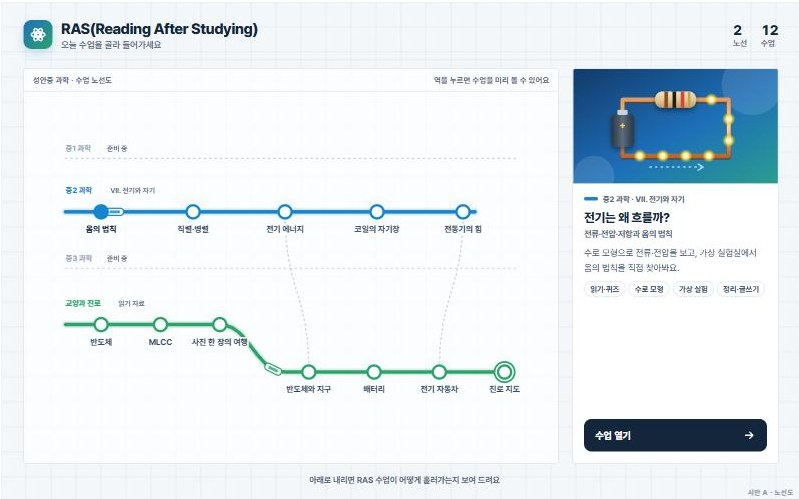
A 노선도단원을 지하철 노선처럼"전혀 역 같지가 않음 … 단원이 많아지면 어떻게 될지 모르겠음"
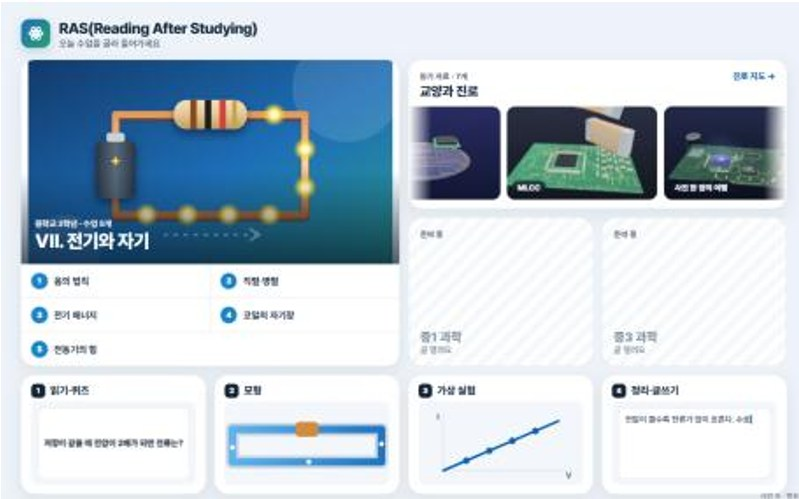
B 벤토 격자크기가 다른 칸을 빽빽하게"카드가 너무 많아 너무 AI틱함. 근데 목업 카드 애니메이션은 괜찮음"
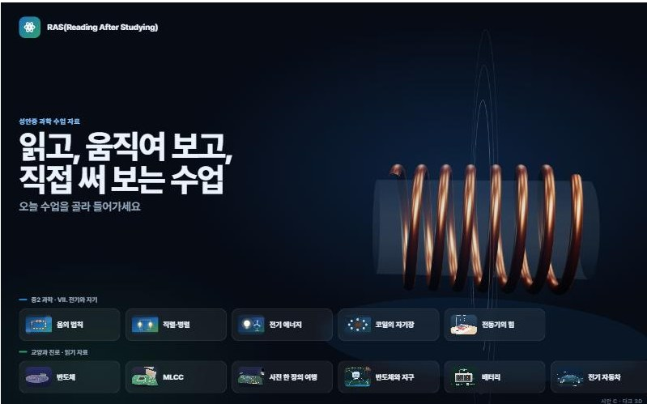
C 다크 3D검은 바탕에 큰 3D 코일"수업이랑 분위기 충돌함. 코일이 너무 뜬금없음"
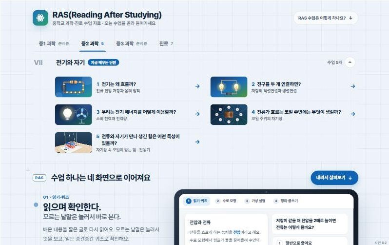
D2 → 게시탭별 단원 목차 + 아래로 내리면 네 장면 소개. B에서 칭찬받은 움직이는 화면만 살림
시안은 저장소 밖 연습 폴더에 따로 만들어 비교. 고른 것만 저장소에 넣음
말로 못 하던 "느낌"에 이름 붙이기
디자인 용어를 알면 시안이 달라짐
날짜
내가 한 말 (원문)
디자인 용어
10월 10일
"카드가 너무 많아 너무 AI틱함"
벤토 격자, 카드 남발
10월 10일
"hairline? 그거 멋지던데"
헤어라인(1px 선), 그리드
10월 12일
"위계 두자"
시각적 위계
10월 15일
"디자인 너무 올드함"
스큐어모피즘(광택·질감)
11월 26일
"너무 딱딱한데 애플 스타일로 좀 미니멀하게"
미니멀, 여백
이름으로 주문하면 시안이 갈라짐: "글래스모피즘 1안, 미니멀 1안, 머티리얼 1안"
같은 허브 수업 카드를 스타일만 바꿔 실제로 구현 · 버튼은 눌러 볼 수 있음
시안 ① 평면(플랫) · 미니멀 · 머티리얼
평면(플랫)
그림자·광택 없이 원색 면으로
좋은 점단순하고 가벼움, 멀리서도 잘 보임
아쉬운 점색이 늘면 유치해지고 위계가 약해짐
교실 태블릿: 맞음 (색을 줄이면)
미니멀
흰 여백, 얇은 선, 꾸밈 최소
좋은 점내용이 주인공, 가장 가벼움
아쉬운 점잘못하면 비어 보이고 딱딱함
교실 태블릿: 맞음 (라스 틀이 여기에 가까움)
머티리얼
종이를 겹친 높이를 그림자로, 누르면 물결
좋은 점누를 곳이 분명, 규칙이 공개되어 있음
아쉬운 점구글 앱처럼 보임, 그림자가 쌓이면 무거움
교실 태블릿: 조건부
같은 카드, 질감만 세 가지 · 버튼은 눌러 볼 수 있음
시안 ② 글래스모피즘 · 뉴모피즘 · 클레이모피즘
글래스모피즘
뒤가 비치는 젖빛 유리
좋은 점화려하고 요즘 느낌
아쉬운 점글자가 바탕에 묻힘, 흐림 효과가 무거워 느린 태블릿에서 버벅임
교실 태블릿: 안 맞음
뉴모피즘
바탕을 눌러 빚은 듯한 볼록·오목
좋은 점부드럽고 만지고 싶은 느낌
아쉬운 점대비가 낮아(1.7 : 1) 버튼이 안 보이고, 눌렀는지 구분이 어려움
교실 태블릿: 안 맞음
클레이모피즘
말랑한 점토처럼 두툼하고 둥글게
좋은 점친근하고 장난스러움
아쉬운 점중학생에겐 어려 보이고, 과학 그림과 부딪침
교실 태블릿: 조건부 (게임·초등)
같은 카드, 네 가지 더
시안 ③ 스큐어모피즘 · 브루탈리즘 · 벤토 격자 · 다크 모드
스큐어모피즘
나무·칠판·광택 버튼, 실제 물건 흉내
좋은 점처음 봐도 무엇인지 앎
아쉬운 점올드함, 장식이 내용을 가림
교실 태블릿: 틀로는 안 맞음
브루탈리즘
굵은 검은 테, 원색, 일부러 거칠게
좋은 점눈에 확 띄고 개성 있음
아쉬운 점오래 보면 피곤, 무엇이 중요한지 흐려짐
교실 태블릿: 안 맞음
벤토 격자
도시락처럼 크기가 다른 칸
좋은 점여러 정보를 한눈에
아쉬운 점칸이 많아지면 AI티 (시안 B 반려)
교실 태블릿: 조건부 (첫 화면 한 곳)
다크 모드
검은 바탕, 빛나는 강조
좋은 점어두운 방·별 그림에 좋음
아쉬운 점밝은 교실·프로젝터에서 흐림, 인쇄 불가
교실 태블릿: 조건부 (별 수업 그림 칸만)
흰 바탕, 얇은 선그림만 진하게, 매트하게위계는 글자 크기로강조색 라스 파랑 하나
2026-10-22 디자인기준.md 1장
그래서 라스는: 흰 바탕 + 라스 파랑 하나 + 매트한 그림
교실 형광등·햇빛 아래서도 대비가 높은 흰 바탕
학생은 수업 60여 개를 같은 틀로 만남 → 헤매지 않음
공들이는 곳은 핵심 그림 한 곳. 틀은 조용하게
흐림·광택·그림자 장식이 없어 학교 태블릿에서도 가벼움
실제 지시문 · 10월 12일, 게시 이틀 뒤
"30년 차 디자이너라고 생각하고 냉정하게"
내가 쓴 원문
요청
지금 깃헙 초기 페이지 저 버튼 용도가 없음. 삭제해도 될 것 같음.
그리고 너가 30년차 디자인 ui ux 디자이너라고 생각하고 냉정하게 잘한점과 개선점 평가해봐
평가를 받고 번호로 답함
1. 세로화면 지원되게도 ㄱㄱ / 2. 제일 위에 있는거 삭제 / 3. 이건 안 고쳐도됨 / 4. 부제 좀 줄이자 / 5. 위계 두자 / 6. 이건 뭔 소린지 모르겠다 / 7. 니 말대로 함 만들어보자
다듬은 판 (Codex에 그대로 써도 됨)
역할교육용 웹 화면을 30년 다룬 UI·UX 디자이너
먼저 평가만고치지 말고 잘한 점 3개, 개선점을 번호 붙여 나열
개선점마다근거(화면 사진의 어디), 고치는 데 드는 품, 안 고치면 생기는 일
그다음내가 번호마다 "고침 / 그대로 / 모르겠음"으로 답하면 그것만 고침
검사고친 뒤 가로 1280×800, 세로 800×1280 사진을 찍어 보고
역할을 주면 칭찬보다 지적이 많아짐. "모르겠다"고 답한 6번은 고치지 않음
직접 눌러 보기 · 평가 뒤 같은 날 고쳐 게시
지금 허브: 평가 7개 중 5개를 반영
쓸모없던 멈춤·다시 보기 버튼, 맨 위 안내 링크 삭제
세로 화면에서도 장면이 맞게
부제는 한 줄, 목차는 크기로 위계
예시 수업 이름표를 그림 위로 옮김
왼쪽은 실제 라스 첫 화면. 아래로 내리면 네 장면 소개
고치기 전 · 후 (둘 다 실제 페이지) · 10월 15일
"애니메이션이랑 디자인 너무 올드함, 화살표도 너무 난잡하고"
1차본 번지는 파란 띠, 주황 점, 굵은 화살표
다시 그린 판 얇은 선 하나, 파랑 한 색, 가는 화살표
남이 만든 디자인 스킬을 저장소에 넣어 써 봄
frontend-design 스킬 들여오기
10월 2일 · 넣음Anthropic이 공개한 디자인 지침(Apache 2.0)을 저장소 스킬 폴더에 그대로 복사
→
3주 동안 씀수업마다 이 지침과 라스 규칙을 함께 읽음. 둘이 부딪치는 곳이 생김
→
10월 22일 · 요약✎ "frontend-design 지침 한국어 요약본 만들어 줘."
→
같은 날 · 결정✎ "맞는 부분만 디자인기준에 옮기고 지침 폴더는 빼."
영어 지침은 한국어 요약본을 먼저 받아 내가 직접 읽고 판단
Codex도 같은 SKILL.md 형식이라 공개 스킬을 그대로 넣어 볼 수 있음
통째로 따르지 않고 골라 옮김
맞는 것만 남기기: "수업마다 개성"은 라스와 반대
디자인기준으로 옮긴 것
만드는 순서
짧은 계획 → 흔한 기본값 점검 → 만들기 → 화면 찍어 비평
흔한 기본값 피하기
AI가 만든 화면에 자주 나오는 모양 목록 (다음 장)
절제
공들이는 곳은 한 곳. 다 만들면 없어도 되는 것 하나를 뺌
화면 속 글쓰기
버튼에는 누르면 일어나는 일을 (확인 말고 꼭지 잠그기)
옮기지 않은 것
수업마다 개성 있게
학생은 같은 틀이어야 헤매지 않음
서체를 새로 고르기
Pretendard 하나로 고정
과감한 실험
새 색·배치를 시도하지 않음. 기준 수업과 나란히 놓고 만듦
일부러 그 모양으로 만든 견본 · 10월 14일 "전반적으로 ui와 디자인이 … ai가 만든 티가 너무나"
"AI티" 금지 목록: 눈으로 보면 바로 앎
핵심 개념
이모지·아이콘 상자내용과 상관없는 그림 상자
오늘의 학습전류와 전압
그라디언트 칸색이 번지는 바탕 칸
전기는 왜 흐를까?
한 단어만 색칠한 제목강조할 이유 없는 한 단어
읽기
모형
실험
똑같은 둥근 카드같은 모서리, 같은 그림자, 같은 아이콘
LESSON옴의 법칙STEP 01 / 04
영어 대문자 이름표고정폭 숫자까지 붙이면 전형
60+LESSONS
큰 숫자 + 작은 이름표첫 화면 장식용 숫자
NEW추천핵심인기3D퀴즈
알약 배지 남발모든 것에 꼬리표
지금 시작
검은 바탕 + 형광 하나번지는 빛까지 붙이면 전형
디자인기준.md 8장, 11문항 중 일부 · 오른쪽 답은 지어낸 예시
보고 전 점검표: 예·아니오로 답하게 하면 스스로 걸러 냄
질문
첫 답
에이전트가 한 일
강조색이 라스 파랑 하나뿐인가?
예
—
그림 칸에 큰 빈 곳이 없는가?
아니오
장치를 키우고 칸을 잘라 맞춘 뒤 다시 찍음 → 예
그림 속 이름표가 잘리거나 겹치지 않는가? (확대해서)
아니오
세로 화면에서 겹친 이름표 두 개를 옮김 → 예
움직이는 장면을 여러 시점으로 찍어 봤는가?
예
시작·중간·끝 사진을 보고에 붙임
화면에서 없어도 되는 것 하나를 찾아 뺐는가?
예
제목 위 작은 이름표를 뺌
"예쁘게"는 검사할 수 없음. "빈 곳이 없는가?"는 사진을 보고 스스로 답할 수 있음
같은 내용, 하나만 바꿈 · 파란 테가 라스 쪽
디자인 용어 ① 위계 · 여백 · 대비 · 강조색
전기는 왜 흐를까?
전류·전압·저항과 옴의 법칙
수로 모형으로 봐요
수업 열기
전기는 왜 흐를까?
전류·전압·저항과 옴의 법칙
수업 열기
위계
무엇을 먼저 읽을지 크기·굵기·위치로 정함
읽기 · 퀴즈 전압과 전류
수로 모형 높이 차 = 전압
가상 실험 그래프 그리기
정리 · 글쓰기
읽기 · 퀴즈전압과 전류
수로 모형높이 차 = 전압
여백
빈 곳이 묶음을 만듦. 선 대신 여백으로 나눔
수업 열기뉴모피즘 버튼
수업 열기라스 파랑 위 흰 글자
대비
글자와 바탕의 밝기 차. 4.5 : 1 이상이면 잘 읽힘
전류전압저항
전압이 2배면 전류도 2배
전압이 2배면 전류도 2배
나머지는 무채색으로 조용히
강조색
눈을 끌 곳에만 쓰는 색 하나. 여럿이면 강조가 사라짐
같은 내용, 하나만 바꿈 · 파란 테가 라스 쪽
디자인 용어 ② 무채색 · 그리드 · 헤어라인 · 마이크로 인터랙션
무채색
흰·회색·검정 계열. 바탕과 글자를 맡고 색은 하나만 남김
그리드
보이지 않는 세로 칸. 모든 요소의 끝선이 맞음
Ⅶ전기5Ⅷ별6Ⅱ지권7
헤어라인
머리카락처럼 얇은 1px 선으로 칸을 나눔
마이크로 인터랙션
누르면 살짝 눌리고, 결과가 버튼 바로 아래 나타남
고치기 전 · 후 · 10월 11일 화산 분출물 장면
정지 사진 검사는 통과, 그런데 "분출물이 그냥 수평으로 움직임"
1차본 정지 사진 한 장 에이전트가 찍어 보고 "문제 없음"
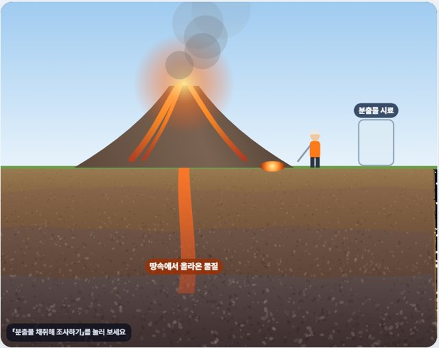
같은 장면, 버튼 누른 뒤 세 시점 땅 위를 미끄러지기만 함
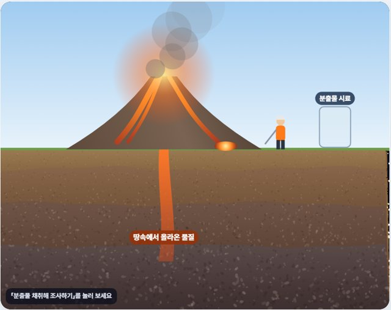
0.3초0.7초
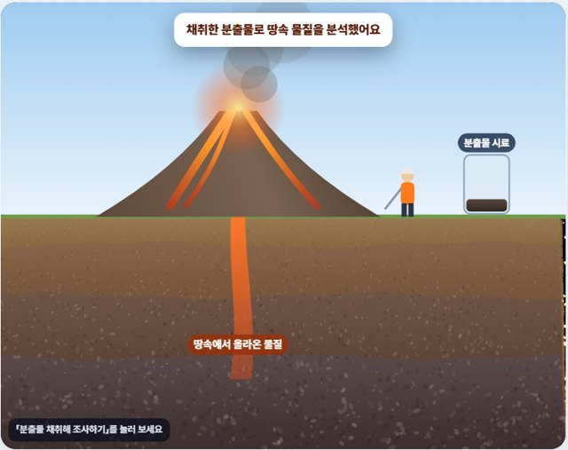
1.8초
"애니메이션이 너무 열악함. 분출물이 그냥 수평으로 움직이고 디자인도 너무 대충 만든 거 같으니 개선해라"
같은 날 다시 그린 판 · 버튼 누른 뒤 0.7초, 1.2초, 5초
움직임 검사: 누르고, 연속으로 찍고, 스스로 비평
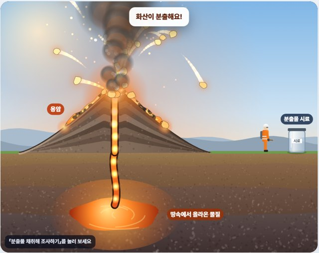
시작: 분출물이 포물선으로 날아오름
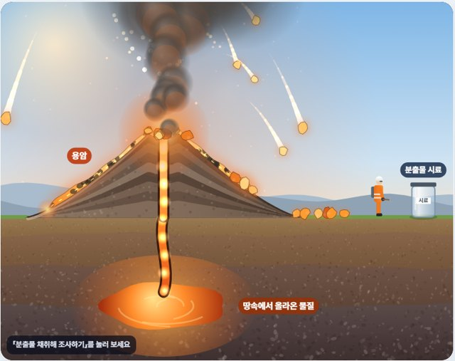
중간: 떨어지며 식고 화산재가 퍼짐
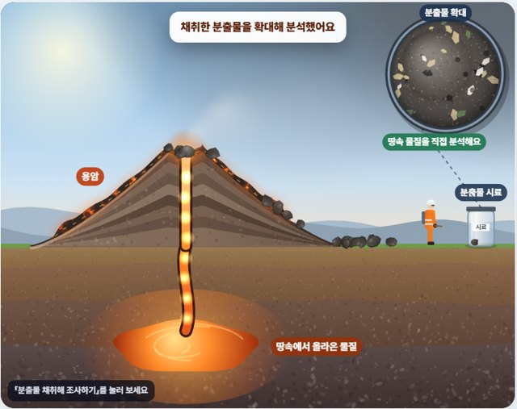
끝: 조사원이 채취해 확대 분석
실제처럼?중력·포물선·경사를 따라 흐름. 직선으로 미끄러지지 않음
손으로 그린 수준?도형 늘어놓기가 아님
글자이름표가 겹치거나 잘리지 않음
끝 상태동작이 끝까지 이어지고 결과가 화면에 남음
고치기 전 · 후 (둘 다 실제 페이지, 태블릿 한 화면 1280×740 비율) · 10월 15일 물체의 색
"학습자 친화적이지 않다" → 넘침 0px
1차본 기록표·'왜 그럴까?'를 세로로 쌓아 결과가 화면 밖
한 화면 배치 실험하기 / 관찰 기록 / 왜 그럴까? 탭
tools/lesson-kit/ · 다음 수업부터는 명령 한 줄
검사도 도구로 만들어 둠
모음 사진
qa_sheet.py 장면 목록을 가로·세로로 한 번에 찍어 사진 두 장 + 오류 보고
움직임
shot.py 버튼을 차례로 누르고 기다렸다 찍음. 시작·중간·끝
한 화면
fit_check.py 태블릿 한 화면에서 몇 px 넘치는지 잼
> python tools/lesson-kit/fit_check.py light-color
1280x740 sim1-lab.html → 넘침 281px (맨 아래: why-list)← 고치기 전 (지어낸 숫자)
1280x740 sim1-lab.html → 통과
800x1220 sim1-lab.html → 통과
한 화면 검사: 모두 통과
Codex에서도 같음: "검사 스크립트를 tools/에 만들고, AGENTS.md에 '보고 전에 이 명령을 돌려 결과를 붙임'"
.claude/skills/lesson-web/SKILL.md · 64줄
문서가 쌓이면 스킬로
반려 표작업방식_이삭T와_일하는_법.md
+
절차수업웹자료_표준개발절차.md
+
디자인디자인기준.md
+
도구tools/lesson-kit/
→
lesson-web 스킬"○○ 수업 만들어 줘"에 저절로 켜짐
문서는 "먼저 읽어"라고 해야 읽음. 스킬은 요청 문장만 보고 켜져서 문서를 차례로 읽힘
스킬 안에는 규칙을 다시 쓰지 않고 어느 문서를 읽을지만 적음 → 문서를 고치면 스킬도 따라감
name: lesson-web description: 중학교 과학 태블릿 수업 웹 페이지 … "○○ 수업 페이지 만들어줘" 같은 요청이면 사용
시작 전에 아래를 모두 직접 열어 읽는다
1 디자인기준 · 2 작업방식 · 3 표준개발절차 · 4 단원 기준 문서 · 5 재사용 도구
0. 모드 고르기
프로토타입 → 묻지 않고 끝까지 / 디스커션 → 범위부터 확인
2. 구성 · 3. 제작 규칙
읽기·시뮬레이션·정리, 3D와 2D 고르기, 한 화면 설계
4. 검사 (PR 전에 반드시)
교육과정 대조 · 모음 사진 · 움직임 · 한 화면 · 그림 속 글자 · 디자인 점검 · 링크
5. 제출
가지에 올리고 미리보기 주소 → "게시해" 하면 합침
스킬 하나의 뼈대
lesson-web 뜯어보기
먼저 읽을 것 5개 규칙은 문서에, 스킬은 길잡이
모드 고르기 묻고 시작할지, 끝까지 갈지
구성 수업 하나 = 페이지 4개 기본형
검사 7가지 반려에서 하나씩 생긴 것
제출 내가 보기 전엔 게시 안 함
실제 지시문 · 10월 7일 ~ 10월 21일
"프로토타입 / 오토"라는 신호어
내가 쓴 원문 (그대로)
끝까지 가라
탐구안함,흰,3,3d 오토진행
수업 만들자 오토로
배터리로 ㄱㄱ하자. 딥리서치 진행한 후 빌드하자. 오토로 ㄱㄱ
멈춰서 묻고 가라
별을 시각화하기 좋은 오픈소스 이용해볼까? 일단 디스커션부터 ㄱㄱ
AGENTS.md에 넣을 판 (Codex)
신호어"프로토타입", "오토", "묻지 말고", 자리를 비운다고 함 → 프로토타입 모드
프로토타입질문 없이 끝까지 만듦. 임의로 정한 것은 보고의 "임의로 정한 것"에 모음
그 외디스커션 모드: 범위·구성을 짧게 묻고 시작
공통프로토타입이어도 품질 기준은 낮추지 않음
첫 줄의 "탐구안함,흰,3,3d"는 에이전트가 물은 네 질문에 대한 답. 짧게 답해도 통함
10월 22일 "수업 하나 만들 때마다 하나의 세션 … 세션별 제목이 너무 중구난방"
한 수업 = 한 세션, 이름은 [대단원] 수업 · 작업
전 (요청 첫 문장이 그대로 제목, 예시)
수업 하나 더 만들자
이거 게시하자
수업 만들자 오토로
이번에는 3d 안 넣어도 될 것 같다
야 이거로 수업 만들어
후 (스킬이 시작하자마자 바꿈)
Ⅱ광물의 특성 · 새 수업
Ⅱ지구 내부 · 화산 장면 다시
Ⅲ파동 · 그림 다시
Ⅷ별의 밝기 · 새 수업
허브위계 정리
세션 하나가 길어지면 앞 내용을 잊음 → 수업마다 새로 시작. Codex의 작업(스레드) 이름에도 같은 규칙
10개
"10개씩 하면 내가 확인하기 힘들어"
5개
"5개씩 하니까 컴퓨터가 … 자주 감"
2~3개
확인도 되고 컴퓨터도 버팀
11월 13일 ~ 11월 16일
동시에 여러 수업: 10 → 5 → 2~3
동시 개수는 내가 확인할 수 있는 수를 넘지 않게
세션마다 미리보기 서버·브라우저가 떠서 내 컴퓨터가 먼저 지침
"메모리 문제로 1~3단원 먼저 만들고 다 만들면 4~6단원" 처럼 나눠서 차례로
Codex의 클라우드 작업은 내 컴퓨터를 쓰지 않음. 대신 확인하는 사람은 여전히 나 하나
고치기 전 · 후 (둘 다 실제 페이지) · 11월 7일 "/goal 토큰 다 쓸 때까지 계속 수업 이어서 만드세요"
"1시간 반 만에 수업 10개 … 그만큼 퀄리티가 떨어진 것 같다"
대량 생산된 판 평면 그림, 감자가 뿌리에 매달림 (틀린 그림)
11월 13일 전면 수정 3D 감자 식물, 기는줄기 끝에 감자
실제 지시문 · 11월 7일, 대량 생산 4시간 뒤
대량 생산 뒤 점검: 원인부터 묻기
내가 쓴 원문 (줄임)
전 세션에서 goal을 이용해서 수업을 대량 생산했어. 평소 한 수업 만드는데 40분 넘게 걸리는데 1시간 반 정도만에 수업 10개 정도 … (이 부분 확인) 일단 전 세션에서 어떤 수업 만들었는지 쭉 봐라.
… 고치기 전에 저렇게 저퀄로 대량생산 된 이유가 뭘까?에 대한 답을 해줘
다듬은 판 (Codex에 그대로 써도 됨)
먼저 찾기저장 이력에서 지난 작업이 만든 수업 목록과 걸린 시간
원인평소 40분짜리가 왜 9분이 됐는지. 빠진 단계(검사·자료 조사)를 짚기
평가수업마다 디자인기준 점검표에 예·아니오 표
순서하나만 먼저 고쳐 보여 주고, 내가 승인하면 나머지
기록고친 수업과 남은 수업을 저장소 안 진행표에
# 넘김 문서: 수업 전면 수정 (지어낸 예시)목표 동물과 에너지 수업 5개를 기준 수준으로
먼저 읽을 것 디자인기준.md, 작업방식.md, 이 문서
지금까지 순환계 고침·게시 (그림 3D, 움직임 검사)
남은 것
[ ] 소화계 [ ] 호흡계 [ ] 배설계 [ ] 자극과 반응
이번 세션에서 받은 지적 (원문)
"그림자료랑 애니메이션 자료가 너무 부족함"
끝났다는 기준 점검표 모두 예, 미리보기 주소 보고
11월 7일 · 11월 8일 · 11월 13일
다음 세션에 넘기는 법: 수정 포인트를 문서로
"너가 프롬프트 만들어서 내가 복붙하면 됨?" → 넘김 문서를 저장소에
"다음 수정할 거 새 세션에서 만들자. 수정 포인트도 전달하기"
"어디까지 수정했는지 기억이 안 남" → 체크 칸이 있으면 새 세션이 이어 감
4부 정리
라스 한 수업이 만들어지는 길
기준 문서교육과정·디자인기준·반려 표스킬이 먼저 읽힘
→
오픈소스three.js, 실제 자료라이선스 확인
→
제작lesson-kit 공통 부품한 수업 = 한 세션
→
검사 3종사진·움직임·한 화면+ 점검표 예·아니오
→
미리보기가지에 올려 태블릿으로내가 직접 눌러 봄
→
게시"게시해" 한마디학생 주소에 반영
반려 한 번 = 규칙 한 줄. 규칙이 쌓여 스킬이 됨
4부에 나온 말
4부 용어
저장소
파일과 고친 이력을 함께 보관하는 폴더라스 = seongan-science 저장소 하나
가지 (브랜치)
원본을 건드리지 않고 고쳐 보는 사본 줄기확인 뒤 합침
깃헙 페이지
저장소를 그대로 웹 주소로 공개학생은 주소만 열면 됨
클라우드 세션
내 컴퓨터가 아닌 서버에서 도는 작업Codex의 클라우드 작업
딥리서치
여러 자료를 오래 찾아 읽고 정리찾은 것과 확인 안 된 것을 나눠 표시
오픈소스
코드를 공개해 누구나 쓰게 한 것three.js, d3-celestial
라이선스
써도 되는 조건. 출처 표시 등표시가 없으면 쓰지 않음
시안
고르기 전에 받아 보는 여러 안A·B·C·D → D2
디자인 기준 문서
색·그림·배치 규칙과 점검표흩어진 규칙을 하나로
AI티
인공지능이 만든 화면에 흔한 기본값그라디언트 칸, 똑같은 카드
스킬
요청 문장을 보고 저절로 켜지는 작업 설명서lesson-web
움직임 검사
버튼을 누른 뒤 여러 시점을 찍어 비평정지 사진이 놓친 것
한 화면 검사
태블릿 한 화면에서 넘치는 px을 잼fit_check.py
프로토타입 모드
묻지 않고 끝까지 만드는 방식신호어 "오토"
목표 걸기 (goal)
끝날 조건을 걸고 계속 이어서 일함빠르지만 품질이 떨어지기 쉬움
넘김 문서
다음 세션이 이어 가도록 남기는 메모목표·남은 것·끝 기준
5부
수업 PPT 제작기
학생이 혼자 읽는 라스 위에, 내가 큰 화면에서 넘기는 발표를 얹음
생기부라스수업 PPT학습지폴더 도우미게임스킬 모음
2026년 11월 3일 · 중2 '자기장 속 코일이 받는 힘'
라스가 있는데 왜 또 만들었나?
라스 · 학생 태블릿
학생이 혼자 읽고 혼자 조작함
세로로 긴 글, 자기 속도대로
3D는 학생이 마음대로 돌려 봄
수업 발표 · 교실 큰 화면
내가 한 장씩 넘기며 설명함
16:9 가로, 글씨 크게, 한 장에 생각 하나
3D는 장마다 내가 정한 방향·상태로
공간 감각이 필요한 단원이라 칠판 그림으로는 부족했음 → 라스의 3D를 발표에서 그대로 쓰기로 함
실제 지시문 · 11월 3일
첫 요청: "PPT처럼 가로로, 차근차근, 3D 차용"
내가 쓴 원문
이 내용으로 수업 해야 해서 지금 당장 필요한 건 내가 쓸 '수업 자료'야. 내가 원하는 것은 ppt 처럼 가로로 넘길 수 있는 페이지가 필요해. … 해당 내용에 있는 3d 시뮬레이션을 차용해서 만들면 좋을 것 같아. 왜냐하면 이 내용은 공간감각이 중요해서 … 이건 평소 만들던 ras 지침을 따르지 않고 새로운 폼을 만드는거니까 나랑 디스커스 하고 빌드해보자
다듬은 판 (Codex에 그대로 써도 됨)
역할교실 큰 화면에서 교사가 넘기는 수업 발표를 만드는 사람
자료lessons/motor-force/의 읽기 글과 3D 시뮬레이션 파일을 먼저 모두 읽을 것
범위교육과정 문서 범위 안. 3D는 새로 그리지 말고 수업 파일의 장면 코드를 가져와 쓸 것
먼저 묻기띄우는 곳·빈칸 방식·분량·두는 곳을 묻고, 장 목차를 표로 보여 준 뒤 승인받기
산출물presentations/motor-force/index.html 한 파일. 16:9, 넘길 때마다 한 단계씩 등장
검사1600×900에서 모든 장을 마지막 단계까지 찍어 글 넘침·3D 가림을 확인하고 보고
만들기 전에 묻고 답함 → 그대로 스킬의 기본값이 됨
디스커션으로 정한 네 가지
정할 것
정한 값
띄우는 곳
교실 큰 화면, 내가 넘김 → 16:9 고정, 글씨 크게
빈칸
화면에서만, 눌러야 열림 → 학생은 공책에 씀
분량
한 차시 약 25장, 세세하게
두는 곳
presentations/<수업>/ → 학생 첫 화면에는 넣지 않고 주소로만 엶
목차 표를 본 뒤
이대로 만들어
첫 몇 장을 본 뒤
~해요. ~되요. 말고. 함. 됨. 음 으로 어투 바꾸고, 처음 페이지에 '이삭 선생님' 첨부하고 나머지 다 만드세요
실제 발표 · 눌러서 넘겨 볼 수 있음
자기장 속 코일이 받는 힘, 25장
3D 전기 그네 하나가 25장 내내 무대가 됨
장마다 보는 방향·전류·자석이 바뀜
표지에서는 장치가 천천히 돎
넘기기: → 키, 스페이스, 발표 리모컨
그림 안을 한 번 누른 뒤 → 키로 넘겨 봄. 아래 막대에 마우스를 올리면 이 발표로 돌아옴
발표용 3D를 따로 만들지 않음
라스의 3D 코드를 잘라 와 다시 씀
라스 수업 파일sim1-swing-3d.html 안에 3D 그네가 이미 있음
→
줄 번호로 자름459~738줄 공통 3D 도구 739~978줄 그네 장면
→
몇 군데만 바꿈발표에 필요한 상태(멈춰 두기, 이름표)를 더함
→
발표 틀에 끼움deck.tpl.html → presentations/…/index.html
# tools/lesson-deck/motor-force/build.py (실제 코드)
src = open('lessons/motor-force/sim1-swing-3d.html').read().split('\n')
c3 = '\n'.join(src[458:738]) # 459~738줄: 공통 3D 도구
sw = '\n'.join(src[738:978]) # 739~978줄: 전기 그네 장면assert c3.startswith('const C3') and sw.startswith('try {') # 자른 자리가 맞는지 확인
같은 그림을 쓰니 교육과정 범위도 라스와 같음. 라스를 고치면 다시 조립해서 발표도 따라옴
잘라 온 코드를 고치는 법
바꿀 문장이 "정확히 한 번" 있을 때만 바꿈
def rep(a, b, s, n=1):
assert s.count(a) == n, (a, s.count(a)) # 없거나 두 번 이상이면 여기서 멈춤return s.replace(a, b)
sw = rep("const Fz = sI * magSign * kI * kB;",
"const Fz = st.freeze ? 0 : sI * magSign * kI * kB;", sw) # 힘을 0으로 붙잡아 둘 수 있게
라스 파일이 바뀌어 그 문장이 사라지면 → 조용히 넘어가지 않고 멈춰서 알려 줌
같은 문장이 두 번 있으면 → 엉뚱한 곳까지 바꾸지 않게 멈춤
Codex에도 그대로 시킬 수 있음: "남의 코드를 바꿀 때는 바꿀 문장이 정확히 한 번인지 확인하는 장치를 넣어"
const Fz = st.freeze ? 0 : sI * magSign * kI * kB;
그림 안을 누르고 → 키: 전류 화살표만 나오고 그네는 가만히 있음
실제 발표 12장 · 기록표
빈칸은 눌러야 열림
학생은 공책에 쓰고, 나는 화면에서 하나씩 엶
단계를 넘겨도 저절로 열리지 않음 → 학생 답을 듣고 나서 엶
빈칸 하나 = <span class="bk" data-a="안쪽">, 번호 ①②는 저절로 붙음
11월 8일 추가 요청
아래키 누르면 빈칸 하나 없어지고 윗키누르면 빈칸 다시 생기는 기능 추가해주고 앞으로 곗속 적용ㄱㄱ
그 뒤로 ↓ 빈칸 하나 열기, ↑ 다시 덮기가 모든 발표의 기본이 됨
학생 읽기 글과 발표 글은 말투부터 다름
화면 글 규칙
처음 판 (라스 말투 그대로 · 예시)
스위치를 누르면 전기 그네가 바깥쪽으로 움직여요. 왜 그럴까요?
고친 판 (실제 발표 8장)
스위치를 누름. 전기 그네는 (나) 바깥쪽으로 움직임.
개조식 "~함, ~됨, ~음", 질문은 "~까?"로 끝냄
한 장에 생각 하나, 글은 세 줄 정도
교과서 문장·낱말 그대로. 빈칸 정답도 교과서 낱말
교과서 도입 일화는 교과서 문장만 쓰고 그림으로 부풀리지 않음
실제 지시문 · 11월 3일, 첫 발표가 끝난 뒤
"RAS 만들고 그걸 기반으로 만드는 플로우"
내가 쓴 원문
좋다 이거도 메모리에 반영하고 스킬로 만들면 좋을 것 같아. 근데 RAS 만들고 그걸 기반으로 만드는 플로우로 가는게 합리적일 듯?
다듬은 판 (Codex에 그대로 써도 됨)
할 일오늘 발표를 만든 과정을 스킬 문서(SKILL.md)로 정리
순서① 라스 수업이 먼저. 없으면 수업부터 만들어 게시 ② 발표는 그 수업의 글 순서·생각 멈춤·오개념·퀴즈·3D를 가져옴
기본값오늘 정한 네 가지(큰 화면, 눌러 여는 빈칸, 약 25장, presentations/)
틀오늘 파일을 tools/lesson-deck/motor-force/에 틀로 남기고, 다음 수업은 복사해서 시작
부르는 말"수업 자료", "발표 자료", "PPT처럼 넘기는"이라고 하면 이 스킬을 쓰도록 설명 줄에 적기
검사화면 검사 방법과 오늘 겪은 함정도 같이 적기
.claude/skills/lesson-deck/SKILL.md
lesson-deck 스킬: 순서를 문서에 박음
목차 표 승인장 제목을 표로 먼저 보여 주고 승인받음
→
틀 복사tools/lesson-deck/motor-force/를 복사해 시작
→
장면 끼우기라스 3D를 잘라 오고 장마다 상태 표를 씀
→
장마다 찍어 검사1600×900, 마지막 단계까지
→
작업 사본으로 올리기"게시해"라고 할 때만 본 저장소에 합침
다음 발표부터는 "자기장 속 코일이 받는 힘 수업자료처럼" 한 줄이면 같은 순서로 진행됨
Codex도 같은 SKILL.md 형식을 읽음 → 이 문서를 그대로 옮겨 쓸 수 있음
실제 스킬 파일의 머리와 차례
스킬 파일은 "설명 한 줄 + 순서 문서"
---
name: lesson-deck
description: 선생님이 교실 큰 화면에서 직접 넘기며 진행하는 수업 발표 자료(16:9, 단계별 등장, 눌러서 여는 빈칸, …)를 presentations/ 아래에 만든다. 이미 만든 RAS 수업(lessons/)을 바탕으로 만든다. 사용자가 "수업 자료", "발표 자료", "PPT처럼 넘기는", … 같은 요청을 하면 사용한다.
---
# 0. 흐름: RAS 먼저, 발표는 그 위에
# 1. 먼저 선생님과 정할 것
# 2. 화면 글
# 3. 만들기
# 4. 화면 검사
# 5. 올리기
설명 줄: 에이전트가 이 줄의 낱말을 보고 스스로 스킬을 꺼냄
본문: 정한 값, 순서, 틀 위치, 검사법
실수가 생길 때마다 한 줄씩 늘어남 → 다음 세션은 같은 실수를 안 함
스킬 '화면 검사' 칸에 적힌 함정
헛디버깅 하나: 창이 가려지면 3D가 멈춤
검사 중 "카메라가 안 움직인다"며 코드를 고치려 함
진짜 원인: 브라우저는 안 보이는 창에 화면 갱신 신호를 보내지 않음
해결: 주소 끝 ?raf=timer → 시계로 대신 불러서 가려져도 움직임
이 한 줄을 스킬에 적어 둠 → 다음 세션은 같은 헛수고를 안 함
실제 발표 · 11월 17일, 세 번째 발표
별의 밝기, 30장
별과 우주 2단원(별의 밝기) 수업 틀 만들어(자기장 속 코일이 받는 힘 수업자료처럼) … 흥미 돋을 수 있는 유튜브 자료도 딥리서치 후 임베드 하자
기존 ras 읽기 자료+수업 자료를 바탕으로 학생들을 위한 종이학습지를 만들고 싶음.
1. 워드나 한글 문서로 너가 생산하면 조판이나 디자인 문제로 차라리 html 코드로 만드는게 좋다고 생각함
2. 각 수업마다 학습지 만들고 이를 누가시켜서 최종적으로는 책을 만들고 싶음 …
일단 나랑 디스커션 하자.
swing(svg1, {}); // 처음
swing(svg2, { flipCur: true }); // 전류 반대
swing(svg3, { flipMag: true }); // 자석 뒤집기
swing(svg4, { flipCur: true, flipMag: true }); // 둘 다 반대
11월 8일 · 두 번째 차시 지시문
쪽 아래 빈 곳은 10mm 이하
근데 만약에 불필요한 여백이 생기면 그걸 최우선으로 없애는 방향으로 ㄱㄱ하자. 개념은 다음 페이지로 넘어가는거 허용함.
PDF를 뽑을 때 쪽마다 찬 높이를 mm로 잼 (판면 265mm)
빈 곳은 그림 폭·답 줄 수·표 칸 높이로 메움. 억지 내용은 넣지 않음
코일이 받는 힘 4쪽: 남음 8 · 9 · 0 · 1 mm
교사용 정답판은 같은 파일, 주소 끝 ?teacher=1
학생판 worksheets/motor-force/
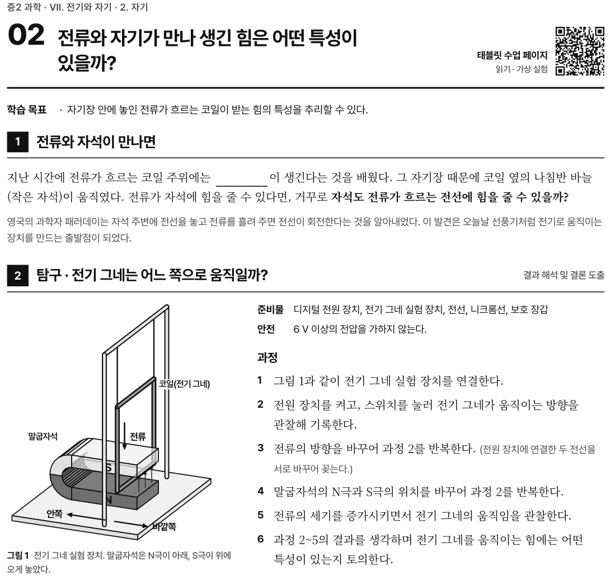
교사판 …/motor-force/?teacher=1
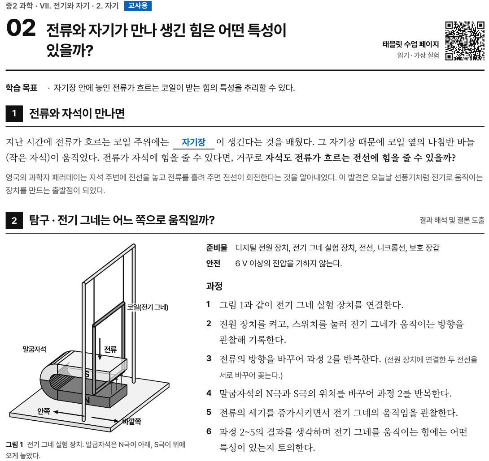
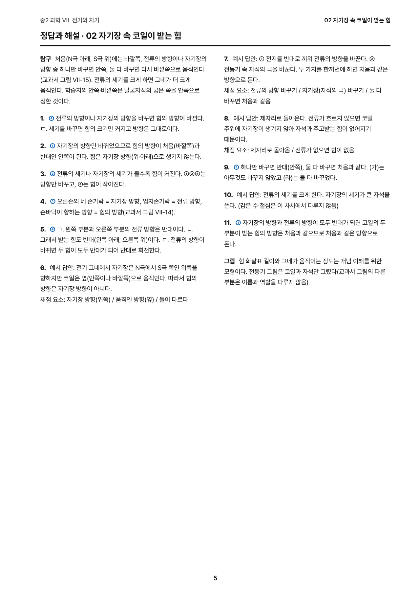
교사판에만 붙는 마지막 쪽
정답은 숨겨 두었다가 보이게만 함
정답은 처음부터 HTML 안에 있음. 학생판에서는 자리만 차지하고 안 보임
그래서 두 판의 줄 높이·쪽 나뉨이 똑같음 (정답은 굵게 하지 않고 색·밑줄로)
교사판 끝에 문항별 해설과 서술형 채점 요소 쪽이 붙음
.bl > i { visibility: hidden }
html.teacher .bl > i { visibility: visible; color: var(--ans) }
실제 지시문 · 11월 8일 밤, 스킬을 만든 직후
"한 개 만드는 데 얼마나 드는지 가늠하고 판단해"
내가 쓴 원문
별과 우주 2~5단원 만들건데, 저번 세션에서 종이 학습지 하나 만드는데 얼마나의 비용(시간, 토큰)이 드는지 가늠하고, 이를 한꺼번에 만드는게 나을지(근데 아웃풋은 한 단원당 하나의 파일이 나와야 함), 독립된 세션으로 만드는게 나을지 판단하고 빌드하자.
다듬은 판 (Codex에 그대로 써도 됨)
먼저 잴 것지난 학습지 작업 기록에서 한 차시에 든 시간·토큰을 숫자로 찾기
판단한 작업에서 차례로 vs 차시마다 따로. 장단점과 추천 하나
조건결과는 차시마다 worksheets/<차시>/ 파일 하나
공통 틀_ws.css·_fig3d.js는 고치지 말 것. 꼭 필요하면 보고만
끝모두 끝나면 속지를 만들고 한 권으로 묶기
검사모든 쪽 남음 10mm 이하, 학생판·교사판 쪽 수 같음
판단 결과: 차시마다 독립 세션 → 그다음은 이 문장이 지시문의 기본형이 됨
독립된 세션으로 각각, 그런데 컴퓨터가 버거워 2개씩
날짜
지시문 (원문 그대로)
11-10
라스기반 종이 학습지 만들거야. 지권의 변화 1~7단원 만들건데, 독립된 세션으로 각각 만들자
11-12
빛과 파동 1~7단원 … 모든 세션 완료되면 내지까지 만들어서 전체 병합하자.
11-12
컴터 강종해서 중간에 멈췄는데 다시 각 세션 돌리자
11-14
5개씩하니까 컴퓨터 맛탱이가 자주 감. … 일단 2개만 ㄱㄱ하자
11-16
물질의 구성 1~6단원 … 메모리 문제로 1~3단원 먼저 만들고 다 만들면 4~6단원 만들자
세션마다 스킬을 읽고 같은 기준으로 만듦 → 동시에 몇 개를 돌릴지는 내 컴퓨터 메모리가 정함
tools/worksheet/make_book.py
차시 학습지 → 속지 → 표지 → 한 권
차시 학습지세션마다 한 차시, 2~4쪽
→
속지대단원·중단원마다 한 장, 차례와 공부한 날 칸
→
표지앞·뒤표지, 양면 인쇄용 빈 쪽
→
한 권 묶기책갈피 대단원 › 중단원 › 차시
학생판 226쪽 대단원 8개, 차시 학습지 50개
교사판 276쪽 차시마다 정답과 해설 쪽이 더해짐
다시 묶기 한 줄 make_book.py 7 8 --cover front
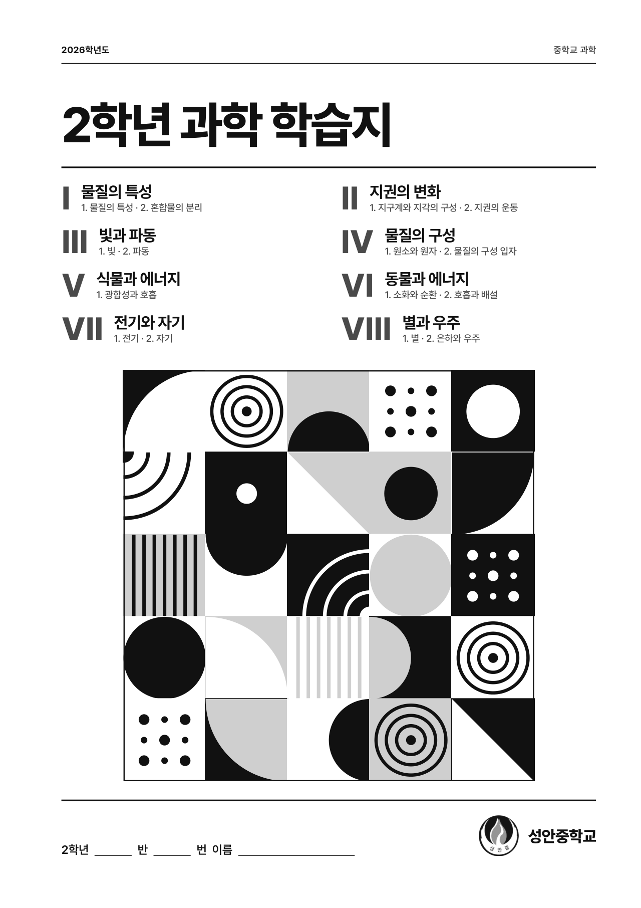
앞표지 · 기하학 칸
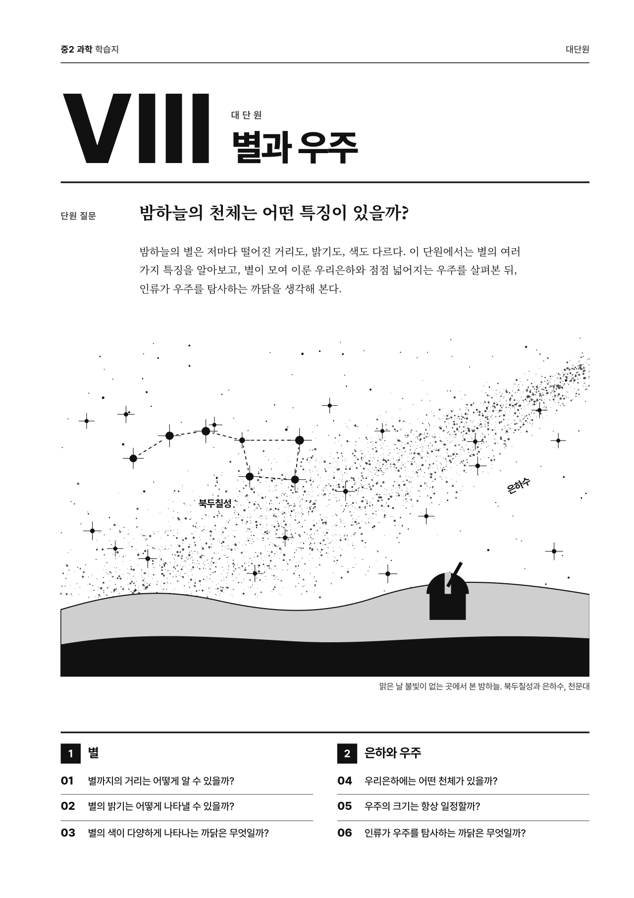
대단원 속지
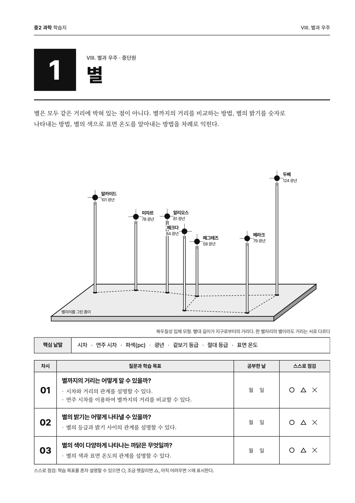
중단원 속지
11월 9~10일 지시문
속지·표지·QR도 대화로 정함
표지
'라스' 이런건 빼고, 그냥 간단하게 성안중학교 2학년 과학 학습지 이런식으로 … 미니멀리즘+기하학으로 하려고 하는데 어때?
QR
차라리 반 번호 이름을 없애고 그 자리에 qr을 넣는건 어떰?
차시마다 그 수업 페이지로 가는 QR. 뽑은 뒤 읽히는지 프로그램으로 확인
완성본 넘겨 보기: 2학년 과학 학습지
이 부에서 나온 용어
6부 용어
조판
글·그림·표를 지면에 앉히는 일한글 프로그램에서 하던 일을 코드로
판면
여백을 뺀, 내용이 들어가는 칸A4에서 세로 265mm
여백
판면 바깥의 빈 테두리. 묶는 쪽을 더 넓게위 15 · 오른쪽 15 · 아래 17 · 왼쪽 20mm
회색 단계
흑백에서 쓰는 회색의 짙기글자 뒤 10%, 그림 면 20%
선 그림 (SVG)
점과 선을 숫자로 적은 그림. 늘려도 안 깨짐
입체 그림 도구
3D 좌표를 받아 명암 있는 선 그림으로 바꿔 줌_fig3d.js
교사판
같은 파일을 주소 끝 ?teacher=1로 연 것
속지
대단원·중단원 앞에 끼우는 소개 쪽
합본 (병합)
여러 PDF를 한 권으로 잇고 책갈피를 다는 일
7부
폴더 도우미
웹이 아니라 내 컴퓨터에서 도는 프로그램도 같은 방식으로 만듦: 조사 → 작은 시험 → 만들기 → 번호 매긴 개선 요청
생기부라스수업 PPT학습지폴더 도우미게임스킬 모음
바탕 화면시작
2026더블클릭 1
02 수업자료더블클릭 2
01 2학년더블클릭 3
03 수업 자료더블클릭 4
6. 전기와 자기더블클릭 5
가장 자주 가는 폴더(98회)도 매번 다섯 번 들어감
시작한 불편
폴더가 너무 많음
행정 업무·수업 준비로 폴더가 끝없이 늘어남
00 각종양식, 01 담임업무, 02 수업자료… 번호를 붙여 위계로 정리했음
정리는 됐지만 깊어질수록 더블클릭이 쌓이고 길을 잃음
정리 방법이 아니라 들어가는 방법이 문제였음
실제 지시문 · 2026-11-26
"폴더가 너무너무 많아… 더 효율적인 방법을 나랑 디스커스 하자"
내가 쓴 원문 (줄임)
컴퓨터 안에 폴더가 너무너무 많아. 그래서 그 해결방안으로 이미지와 같이 폴더마다 항목을 달아 위계적으로 폴더를 구성했음. 근데 폴더 안에 또다른 폴더도 너무 많아서 매번 클릭해서 들어가기가 너무 힘들다.
1. 효율적인 폴더 탐색기 … 더 효율적인 방법을 나랑 디스커스 하자.
2. 폴더 단축키: 자주 쓰는 폴더 그룹을 단축 버튼으로
3. 폴더 뷰어: 자주 쓰는 폴더 히트맵 … 기록이 컴퓨터에 남아있어야 하는데
다듬은 판 (Codex에 그대로 써도 됨)
상황윈도우 탐색기에서 번호 붙인 폴더가 5~6단계로 깊음. 자주 가는 폴더까지 더블클릭이 너무 많음 (폴더 구조 그림 붙임)
먼저 조사비슷한 무료·유료 프로그램을 찾아 표로 비교. 내 아이디어 3개 중 이미 있는 것과 없는 것을 구분. 아직 코드는 쓰지 말 것
가능한지윈도우가 폴더 사용 기록을 남기는지, 작은 시험 코드로 실제로 읽히는지 확인
지킬 것가벼울 것, 지우기 기능 없음, 원래 폴더는 절대 건드리지 않음
산출물조사 결과 문서 한 장 + 단계별 만들기 계획. 내가 고른 뒤에 1단계 시작
0단계 · 만들기 전에 조사
이미 있는 프로그램으로 안 될까?
프로그램
가격
해결해 주는 것
걸리는 점
QTTabBar
무료
하위 폴더 펼침 메뉴, 폴더 묶음 열기
윈도우 11 업데이트 때마다 탐색기에서 사라지는 사례 반복
Listary
무료판 있음
어디서나 빠른 검색, 저장 창에서 폴더 바로 이동
초성 검색 없음
Everything
무료
즉시 검색
폴더 이동 도구가 아니라 검색 도구
XYplorer
$34.95~
나무 구조, 탭, 폴더 묶음
기능이 너무 많고 유료
Directory Opus
$89 안팎
거의 전부
비쌈, 1년 뒤 업데이트는 구독
결론: 한글 초성 검색, 사용 빈도 표시는 어디에도 없음 → 직접 만들 가치 있음
출처: 폴더프로젝트/자료조사_결과.md (2026-11-26 조사, 가격은 그날 각 누리집 기준)
윈도우가 이미 남기는 기록 파일…\Recent\AutomaticDestinations\f01b4d95cf55d32a.automaticDestinations-ms
↓
시험 코드 한 개시험코드\read_jumplist.py · 파일 안 목록을 한 칸씩 풀어 읽음
↓
6. 전기와 자기98회
02 3학년 › 2학기81회
02 3학년 수행평가76회
폴더 1,688개의 열람 횟수·마지막 시각·고정 여부를 모두 읽음
가능한지부터 확인
만들기 전에 작은 시험
탐색기의 '자주 사용하는 폴더'가 이미 기록 파일로 남아 있음
본 프로그램 전에 시험 코드 한 개로 읽히는지만 확인
성공 → 이 숫자가 뒤의 점 표시·자주 가는 곳이 됨
Codex에도: "본 기능 전에 가장 불확실한 부분만 작은 시험 파일로 먼저 확인해"
만들어진 프로그램 · app 폴더 (파이썬 파일 19개, 약 3,900줄)
hotkey.py단축키 받기
launcher.py창·검색 칸
columns.py열 보기
hangul.py초성 풀기
jumplist.py사용 기록 읽기
indexer.py폴더 목록 만들기
filedialog.py저장 창 보내기
bundles.py묶음
fileops.py복사·붙여넣기
userdata.py묶음·고정 저장
만들 도구
파이썬 + 화면 꾸러미 하나
파이썬(이미 설치됨) + 화면 꾸러미 PySide6
초성 검색·단축키는 직접 구현 — 남의 꾸러미(의존성)를 늘리지 않음
실행 파일 하나로 묶으면 느리고 백신이 오인 → 폴더째 배포
파일을 기능별로 나눠 두면 "복사 기능만 고쳐"처럼 범위를 좁혀 시키기 쉬움
움직이는 그림 1 / 7
어디서든 단축키 한 번: Ctrl + `
한글 문서 작업 중 Ctrl + ` (숫자 1 왼쪽 키)
도우미 창이 바로 뜸 → 폴더를 고름
Esc → 숨김. 꺼진 게 아니라 알림 영역에서 대기
다시 Ctrl + ` → 보던 자리 그대로
켤 때마다 바탕 화면을 찾아갈 필요가 없음. 컴퓨터를 켜면 저절로 대기
움직이는 그림 2 / 7
마우스를 올리기만 하면 오른쪽으로 펼쳐짐
폴더 위에 올리기 → 오른쪽 열에 그 안이 펼쳐짐
오른쪽으로 옮겨 가며 계속 → 더블클릭 0번
깊어지면 왼쪽 열이 밀려남
왼쪽 끝 ◀ 띠에 올리면 가려진 열이 다시 보임
클릭하면 그 폴더가 탐색기로 열림. 지금 있는 열은 진한 파란 줄
움직이는 그림 3 / 7
초성만 쳐도 찾음: ㅅㅎㅍㄱ hwp
맨 위 칸에 ㅅㅎㅍㄱ (수행평가의 첫소리)
한 글자 칠 때마다 결과가 좁혀짐
띄우고 hwp → 한글 파일만 남음
친 낱말은 빨갛게, 아랫줄은 경로. 경로를 누르면 그 폴더가 열림
띄어쓰기를 안 해도 찾음 ('브리티다운로드' = '브리티 다운로드')
움직이는 그림 4 / 7
"다른 이름으로 저장" 창을 원하는 폴더로 보내기
한글에서 저장 창이 '문서' 폴더로 열림
그 상태로 Ctrl + ` → 도우미 위에 파란 띠
열 보기로 폴더를 찾아 클릭
저장 창이 그 폴더로 이동. 써 둔 파일 이름은 그대로
엑셀·크롬의 저장·열기 창에서도 똑같이 됨
움직이는 그림 5 / 7
묶음 하나 누르면 폴더 4개가 화면을 나눠 열림
왼쪽 묶음: 같이 여는 폴더를 최대 4개 묶어 둠
누르면 탐색기 창이 화면을 딱 나눠 열림
열린 창은 평소 쓰던 탐색기 그대로
2개
3개
4개
만들기: 폴더를 묶음 위로 끌어다 놓음. "4개까지 하나 묶음으로 만들고 화면 딱 분할되게 만들자"(실제 지시문)
움직이는 그림 6 / 7
고르고, 복사하고, 파란 줄 폴더에 붙여넣기
스페이스바로 파일을 하나씩 표시 (여러 개)
Ctrl + C → 아래에 주황 띠: 무엇을 들고 있는지
붙일 폴더에 마우스를 올림 → 띠 오른쪽이 따라 바뀜
Ctrl + V → 그 폴더로 복사됨
지우기 기능은 일부러 없음(실수 방지). 탐색기와 복사·붙여넣기가 서로 통함
움직이는 그림 7 / 7
누르기 전에 보이는 것: 점(•••)과 숫자(10 ›)
점: 내가 자주 연 정도 (윈도우 사용 기록에서)
점이 많은 폴더가 먼저 눈에 들어옴
회색 숫자 ›: 하위 폴더 수. ›만 있으면 파일만
흐린 폴더: 완전히 비어 있음
"하위 폴더가 10개인 폴더와 2개인 폴더를 클릭하기 전에 구분할 수 있을까?"에서 나옴
실제 지시문 · 써 보고 고칠 것 말하기
개선 요청은 번호를 매겨 짧게
내가 쓴 원문
개선점
1. 방향키로 조작할 때 왼쪽 키누르면 폴더로 가는게 아니라 검색으로 가서 연속성 떨어짐. 즉 뒤로가기 불편하다는 거임
2. 하위폴더가 5개 이상일 때 커서로 뒤로 못가는 문제가 있음. 즉 마지막에 걸려 있음
다듬은 판 (Codex에 그대로 써도 됨)
번호마다지금 일어나는 일 / 원하는 것 / 다시 해 보는 순서를 한 줄씩
범위번호 붙인 것만 고침. 다른 기능·디자인은 건드리지 않음
한 번에3~5개까지. 많으면 다음 차례로 넘김
보고번호별로 "고침 / 못 고침 + 이유"와 직접 확인한 방법
이렇게 하루에 개선 요청을 열 번 넘게 주고받음. 번호가 있으면 "2번은 아직"처럼 짧게 이어 말할 수 있음
디자인 시안 · 같은 화면, 같은 폴더로 네 가지
말로 고르지 않고 그림으로 고름
지금윈도우 기본 칸·테두리
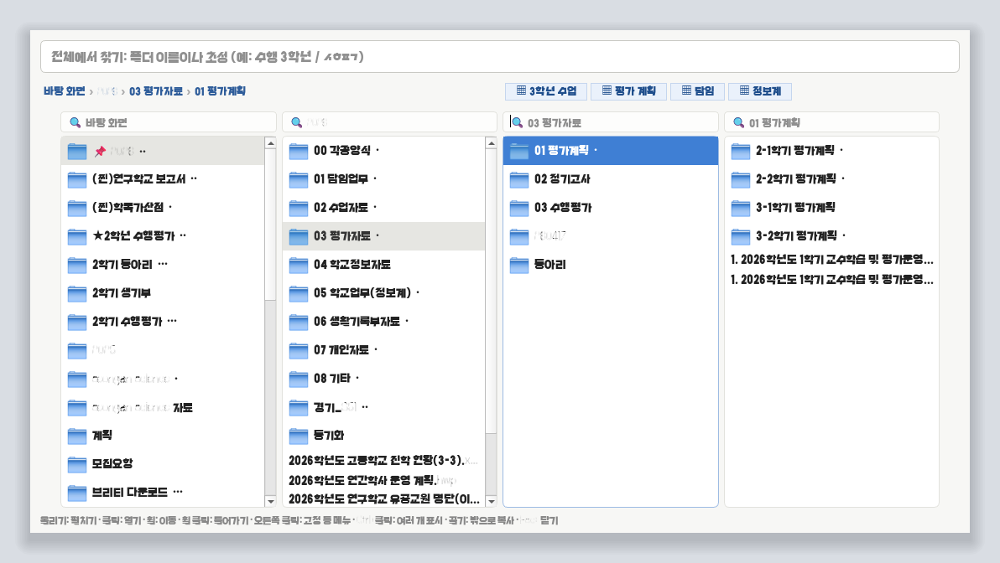
A 파인더 라이트테두리 없이 여백으로 구분 · 지금 화면의 바탕
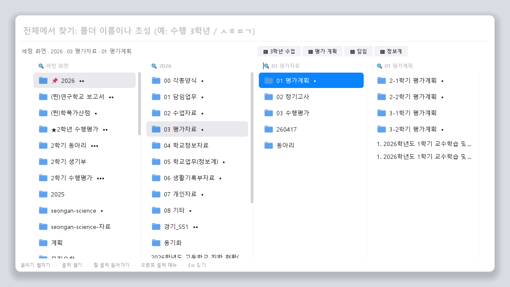
B 스포트라이트 다크어두운 바탕
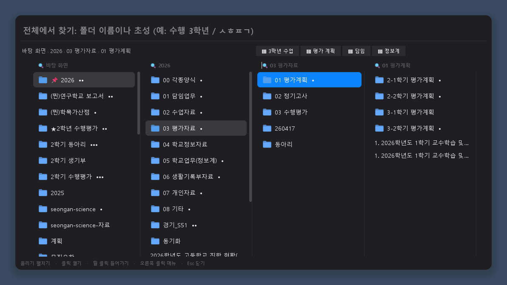
C 윈도우11 카드열마다 둥근 카드, 노란 폴더
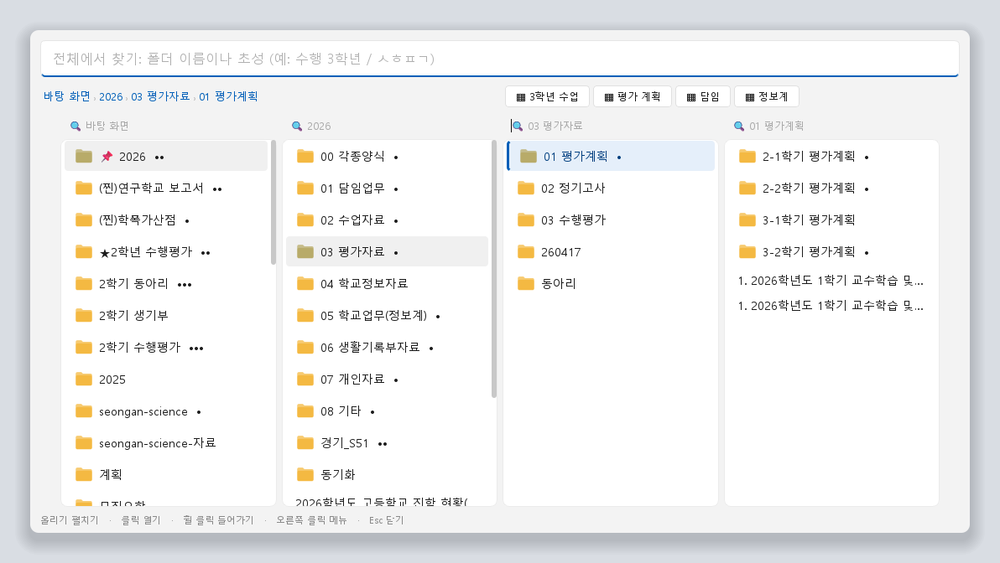
실제 지시문 · 디자인 점검
"애플 스타일로? 시안 찾고, 무거워질지도 판단해"
내가 쓴 원문
이번에는 디자인 점검 좀 해봐라. 뭔가 지금 너무 딱딱한데 애플스타일로 좀 미니멀하게 할까? 시안 몇 개 찾아보고 이런 시스템에 어떤 디자인이 어울릴지 딥리서치 해봐. 디자인 개선하면 무거워질지도 판단하고
다듬은 판 (Codex에 그대로 써도 됨)
시안방향이 다른 시안 3개를 실제 폴더 이름이 든 같은 화면으로 그림 파일로 만듦
무게시안마다 켜는 시간·메모리가 지금보다 얼마나 늘지 예상. 그림자·투명 효과처럼 무거운 것 표시
범위내가 고르기 전에는 코드에 적용하지 않음
적용 뒤같은 화면의 고치기 전·후 그림을 나란히 보여 줌
이름·아이콘 시안은 "다 별로다. 걍 지금 유지하고 나중에 디스커션하자"로 보류 — 안 고르는 것도 결정
폴더프로젝트
app지금 고치는 프로그램
백업
app_2026-11-27_복사붙여넣기_전
사용법.md 마지막 줄: "이 기능이 마음에 안 들면 백업으로 되돌릴 수 있음" 묶음·고정 자료도 직전 판 + 날짜별 7일치를 따로 남김
큰 기능을 넣기 전에
고치기 전에 백업
복사·붙여넣기는 진짜 파일을 움직이는 기능 → 위험이 큼
넣기 전에 프로그램 폴더를 통째로 복사해 둠
마음에 안 들면 그대로 되돌림. 되돌리는 법도 사용법에 적어 둠
Codex에서는 저장소면 커밋(저장 지점)을, 저장소가 아니면 이렇게 복사본을 먼저 만들게 시킴
하나 만들면 다음 불편이 보임 · 2026-11-27
폴더 도우미 → 분할창 프로젝트
폴더 도우미의 묶음폴더 4개를 탐색기로 화면을 나눠 한 번에 열기
→
분할창 프로젝트켤 때마다 같은 작업 환경(창 2~3개)을 듀얼 모니터에 단축키 하나로
"매번 컴퓨터를 켤 때마다 내가 들어가는 환경은 비슷한데, 이를 매번 눌러서 키고 분할창 세팅을 귀찮게 해야 함 … 내 컴터 메모리 사양이 너무 딸려서 가벼워야 함"
hyperframeshyperframes-corehyperframes-animationhyperframes-climotion-graphicsslideshowfaceless-explainergeneral-videoembedded-captionsmedia-use…11개 더
플러그인으로 들어온 스킬
frontend-design화면 디자인 지침
SKILL.mdsaengibu-gwasetuk 폴더 · 맨 앞부분
---name: saengibu-gwasetuk
description:중학교 과학 과목별 세부능력 및 특기사항(과세특)을 NEIS 강의실별 xlsx에 일괄 작성하는 스킬. 사용자가 "과세특 써줘", "세특 작성", "과목세특 채워줘" … 같은 요청을 하면 반드시 사용한다.---# 과목별 세부능력 및 특기사항(과세특) 일괄 작성## 입력 자료 · ## 문장 작성 규칙 · ## 작업 순서 …
saengibu-gwasetuk/
├─ SKILL.md 무엇을, 어떤 순서로, 무엇을 금지
└─ scripts/
└─ gen_gwasetuk.py 바이트·금지어 검사 후 엑셀에 기록
실제 지시문 · 2026-06
스킬은 그냥 파일
"야 스킬 만든거 맞음? 왜 스킬 관리 창에서 안보임"
"과세특 스킬 md 파일 있나?"
스킬 = 폴더 하나 + SKILL.md 한 장 (+ 필요하면 검사 코드)
맨 앞 두 줄 name·description만 늘 읽히고, 본문은 그 스킬을 고른 뒤에 읽힘
어디 있는지 알면 메모장으로 열어 직접 고칠 수 있음
▶ description = 부르는 말
"스킬 써"라고 안 해도 알아서 고름
에이전트는 요청을 받으면 모든 스킬의 description을 훑어 맞는 것을 고름
그래서 description에 내가 실제로 쓰는 말을 넣음: 학습지, 프린트물, 활동지, 속지…
비슷한 스킬끼리 경계도 적음: "화면용 수업은 lesson-web, 큰 화면 발표는 lesson-deck"
description이 흐리면 스킬이 있어도 안 불림 → 품질이 갈리는 첫 자리
개인 스킬 폴더 · 2026-06 ~ 11 (학생 이름·실제 기록 없음)
생기부 4종: 입력 → 규칙 → 결과
스킬
입력 파일
지키는 규칙 (일부)
검사 코드 · 결과물
자율·자치 2026-06
학급 명렬표, 누가기록 안내 엑셀
활동명 앞세우고 명사형 종결, 이름·날짜·괄호 금지
gen_jayul.py → 명렬표에 특기사항·누가기록 열
과세특 2026-06
강의실별 NEIS 엑셀 + 수업 PPT
작성여부·성취도·탁월 열을 따름, 3단계 서사, 상 학생은 극복 서사 금지
gen_gwasetuk.py → 750바이트·금지어 넘으면 저장 안 함
행특 2026-10
학급별 NEIS 엑셀 + 담임 키워드
교육부 기재요령 근거, 키워드에 있는 것만 씀
haengteuk.py → 행동특성 및 종합의견 열
진로 2026-11
명단 엑셀 + 진로 활동 목록·검사 결과
'대회'·학교명·부모 직업 금지, 검사 약점 쓰지 않음
jinro.py read / write → 900바이트·유사도 검사
네 스킬 공통: 작업 전 _원본백업.xlsx 복사, 엑셀이 열려 있으면 닫아 달라고 요청, 시범 몇 명 먼저 보여 줌
라스 저장소 스킬 폴더 · 앞 것을 재료로 다음 것을 만듦
수업 4종: 라스에서 이어지는 순서
lesson-web태블릿 수업 페이지 (읽기·퀴즈·시뮬레이션·정리)먼저: 모드 고르기, 범위 확인 디스커션lessons/ · qa_sheet.py, fit_check.py
→
lesson-deck교실 큰 화면에서 넘기는 수업 발표먼저: 선생님과 정할 것 디스커션presentations/ · "RAS 먼저, 발표는 그 위에"
→
worksheetA4 흑백 종이 학습지, 교사용 정답판 따로규칙: 차시당 최대 4쪽, 쪽 아래 빈 곳 없게worksheets/ · 쪽 그림 확대 점검
→
exam-review시험 직전 정리본 (개념·문제·요약)규칙: 내용 뽑은 뒤 선생님 가중치 받고 멈춤lessons/exam-… · check_exam.py
스킬마다 "이미 만든 라스를 바탕으로"가 적혀 있음 → 내용이 한 번만 만들어지고 모양만 바뀜
실제 지시문 · 2026-06-03
hanja-vocab-generator: 교과 한자어 → 시트 한 줄
작게 시험"이런식으로 나오게 한번 만들어봐 … 테스트로 3개 가보자"
→
바로 스킬로"일단 스킬로 만들어줘."
→
결과단어마다 한자·뜻·어원·4지선다·예문 등 14칸을 탭으로 나눈 한 줄 → 구글 시트에 붙여 넣음
A
B
C
D
E
F
G
H
I
J
K
L
M
N
교과
대단원
중단원
소단원
단어
한자
정의
어원맥락
한자분해
선택지
관련단어
생성완료
그림
예문
사회
4. 아프리카
2. 아프리카의 문화…
전통
傳統
15~30자
모든 단어
글자별
4지선다
2개
TRUE
빈칸
20~45자
입력 예는 실제 지시문의 첫 시험 단어. G~N 칸은 SKILL.md의 규칙(글자 수·형식)을 적은 것
원래 다른 회사 인공지능을 부르는 시트 스크립트가 하던 일을 스킬로 옮김. 생기부·수업 말고도 반복되는 정리 일이면 스킬이 됨
"frontend-design 지침 한국어 요약본 만들어 줘." → "맞는 부분만 디자인기준에 옮기고"
실제 지시문 · 2026-10-14
오픈소스 스킬도 설치해서 씀
"하이퍼 프레임 설치해. 설치한 다음에 시안 만들지 말고 나랑 어떤 영상 만들지 디스커션"
설치 = 남의 스킬 폴더를 내 스킬 폴더에 복사하는 것
설치 뒤에도 바로 만들지 않고 먼저 의논 — 내 방식은 그대로
남의 지침은 통째로 따르지 않고 맞는 부분만 내 기준 문서로 옮김
내 스킬에서 실제로 찾은 예
좋은 스킬의 조건 5가지
조건
실제 스킬에 적힌 것
없으면
① 언제 쓰는지
"학습지", "프린트물", "활동지" … '스킬'이라는 말이 없어도 반드시 사용worksheet · description
있는데도 안 불림
② 먼저 읽을 것
0. 먼저 읽을 것 (건너뛰지 않는다): README, 지면 디자인 원리, 교육과정 기준 문서worksheet · 0장
범위를 넘거나 틀을 무시함
③ 금지 목록
참여함·캡처·이해함·나아가·견주어 금지 / "반려된 것 (반복하지 않는다)" 표saengibu-gwasetuk · exam-review
지난번 실수를 또 함
④ 검사
750바이트 초과나 금지어가 있으면 저장하지 말고 먼저 수정saengibu-gwasetuk · scripts/gen_gwasetuk.py
"다 했어요"만 믿게 됨
⑤ 예시 파일
worksheets/motor-force/ ← 새 차시는 이 파일을 복사해서 시작worksheet · 기준 예시
매번 처음부터 새 모양
✎ 실제 지시문 · 2026-06-09, 2026-11-26
"지금까지 한 과정을 스킬로 정리해줘."
내가 쓴 원문
지금까지 한 과정을 스킬로 정리해줘.
진로 스킬 만들고 이것도 다른 스킬 참고해서 생기부 기재요령에 맞게 스킬 만들어. 금지어도 절대 넣지 않습니다.
다듬은 판 (Codex에 그대로 써도 됨)
재료이 대화에서 잘된 작업 전체와 내가 고치라고 한 것을 정리해 스킬 하나로 만들 것. 같은 폴더의 다른 스킬 SKILL.md를 먼저 읽고 형식을 맞출 것
부르는 말description에 내가 실제로 쓰는 요청 말 5개 이상과, 비슷한 스킬과의 경계를 적을 것
먼저 읽을 것입력 파일 확인 순서, 근거 문서(기재요령 등) 위치
금지·검사오늘 반려된 표현을 금지 목록으로. 분량·금지어를 검사하는 코드를 scripts/에 넣고, 걸리면 저장하지 않게
예시·보고오늘 결과 중 좋은 것을 기준 예시로(이름 없는 지어낸 문장). 만든 뒤 폴더 위치와 SKILL.md 전문을 보여 줄 것
동료 선생님께 · Codex에서 쓰려면
Codex도 같은 SKILL.md 형식을 읽음
같은 것
폴더 하나 + SKILL.md
맨 앞 name·description, 그 아래 본문
scripts/ 같은 딸린 파일
말로 요청하면 description을 보고 알아서 고름
다른 것
스킬 폴더를 두는 위치는 Codex 규칙을 따름
본문 속 경로(라스 저장소 등)는 내 폴더에 맞게 고침
클로드 전용 도구 이름이 적혀 있으면 지움
① 복사스킬 폴더를 통째로 복사 (예: worksheet/)
→
② 넣기Codex가 스킬을 찾는 폴더에 붙여 넣음
→
③ 고치기본문 속 경로·도구 이름만 내 환경에 맞게
→
④ 시험'스킬'이라는 말 없이 평소 말로 요청해 불리는지 확인
스킬은 특정 도구의 기능이 아니라 일하는 방식을 적은 문서
9부 용어
스킬을 다룰 때 나온 말
스킬
일하는 순서·규칙을 적어 둔 폴더잘된 하루를 문서로 남긴 것
SKILL.md
스킬 폴더의 본문 문서맨 앞에 name·description
description
언제 이 스킬을 쓰는지 적은 부르는 말내가 실제로 쓰는 요청 말을 넣음
개인 스킬 폴더
어느 작업 폴더에서나 쓰는 스킬 자리생기부·한자어 스킬
저장소 스킬 폴더
그 저장소 안에서만 쓰는 스킬 자리라스 수업 4종
검사 스크립트
결과를 저장하기 전에 돌리는 확인 코드바이트·금지어·넘침
기준 예시
새로 만들 때 복사해서 시작하는 잘된 결과물학습지 motor-force
플러그인
스킬·명령 등을 한 꾸러미로 설치하는 것frontend-design이 이렇게 들어옴
오픈소스 스킬
남이 공개한 스킬HyperFrames 21개 묶음
10부
시행착오와 피하는 법
반 년 동안 실제로 겪은 아홉 가지. 장마다 겪은 일 → 왜 생겼나 → Codex에 그대로 쓸 한 줄
① 디스커션 먼저② 한 일 = 한 세션③ 중간 점검④ 반려는 문서로⑤ 늘리지 않게⑥ 사실·범위 확인⑦ 빨리 많이⑧ 개인정보⑨ 백업
9월 29일 · 시화호 배포GAS 통합 코드도 만들어 줄 수 있어? 바로 만들지 말고 가능 불가능 말해줘
10월 11일 · 별 수업별을 시각화하기 좋은 오픈소스 이용해 볼까? 일단 디스커션부터
10월 12일 · 3D 로딩로딩 시간이 좀 긴데 개선 방안 있니? 일단 디스커션
10월 14일 · 영상설치한 다음에 시안 만들지 말고 나랑 어떤 영상 만들지 디스커션
17지시문 750개 중 "디스커션"이 들어간 것 5"만들지 말고"
시행착오 ① · 제일 많이 쓴 말
디스커션 먼저, 빌드는 나중
(5부 수업 PPT 「디스커션으로 정한 네 가지」가 이렇게 나온 결과)
겪은 일
처음엔 "만들어 줘"로 시작 → 방향이 다르면 만든 만큼 버림. 그래서 새 일은 거의 다 "디스커션 먼저"로 엶
왜 생겼나
에이전트는 요청을 받자마자 만들기 시작함. 어떤 방법이 있는지, 무엇이 안 되는지는 물어야 먼저 말함
피하는 법Codex에 그대로
아직 만들지 말고, 가능한지와 방법 2~3개를 장단점·걸리는 시간과 함께 표로 보여 줘. 내가 고르면 시작해.
Codex의 계획 모드(/plan)가 같은 일을 함
시행착오 ② · 6월 1일 → 10월 22일 → 11월 17일
한 일 = 한 세션, 이름 붙이기
(4부 라스 「한 수업 = 한 세션」에서 이름 규칙을 봄. 여기서는 왜 그래야 하는지)
겪은 일
"지금 컨텍스트 창이 너무 찼는데, 컨텍스트가 뭐야?"
11월에는 "중첩된 것도 많고 너무 정신 없음" → 세션 정리까지 시킴
왜 생겼나
컨텍스트(에이전트가 한 번에 기억하는 대화 분량)가 차면 앞 대화를 줄여 요약함 → 처음에 말한 규칙이 빠짐
피하는 법AGENTS.md에 한 줄
작업 하나가 끝나면 남은 일과 받은 지적을 넘김 문서에 적는다. 다음 작업은 새 스레드에서 그 문서부터 읽는다.
시행착오 ② 덧붙임 · 11월 14일, 그리고 이 발표
세션을 나누되, 동시에 너무 많이는 금물
(4부 라스 「동시에 여러 수업」에서는 컴퓨터가 먼저 지침)
겪은 일
"5개씩 하니까 컴퓨터가 … 자주 감. 일단 2개만"
이 발표도 부마다 세션을 따로 열어 동시에 돌리다 사용 한도에 걸려 한동안 멈춤
왜 생겼나
세션마다 각자 읽고 만들고 검사함 → 동시에 여럿이면 사용량이 그 배수로 빠짐. Codex도 요금제마다 한도가 있음
피하는 법Codex에 그대로
서로 겹치지 않는 일 2~3개만 동시에 돌려. 하나가 끝나면 결과를 보고 다음을 시작해.
시행착오 ③ · 6월 3일, 6월 10일
중간 점검을 일부러 넣기
(4부 라스 「수로 모형이 아닌 쓰레기 모형」이 다 만든 뒤에야 본 경우)
겪은 일
"너가 사용자라고 가정해 보고 서비스를 쭉 돌렸을 때 … 중간 평가를 진행할 거야"
한자 어휘 서비스를 만들던 중. 6월 10일엔 "지금까지 워크 프로세스 정리하고 로드맵"
왜 생겼나
에이전트는 끝까지 만든 뒤 "완료"라고 보고함. 첫 그림이 틀리면 그 위에 쌓은 것도 다 다시
피하는 법Codex에 그대로
첫 그림(첫 화면) 하나만 만들고 멈춰서 화면 사진을 보여 줘. 내가 좋다고 하면 나머지를 같은 방식으로.
10월 6일 세션답에 영어가 섞임 → "왜 갑자기 영어를 쓰냐"
10월 7일 세션새 세션, 또 섞임 → "영어 쓰지 마라"
10월 12일 세션또 섞임 → "이거 전역으로 기록 안 되어 있음?"
그날 모든 프로젝트 공통 규칙 문서에 한 줄사용자에게는 반드시 한국어로, 존댓말로 답한다. 영어 단어·기술 용어도 섞지 않는다
그 뒤 세션시작할 때마다 규칙 문서를 먼저 읽음 → 말로 다시 할 필요 없음
시행착오 ④ · 같은 지적을 세 번
반려는 반드시 문서로
(4부 라스 「반려 표 읽기」가 그 문서. 여기서는 문서가 없을 때 생긴 일)
겪은 일
"이거 전역으로 기록 안 되어 있음?"
엿새 동안 세 세션에서 같은 지적. 말로 혼내면 그 세션만 알아들음
왜 생겼나
지적은 그 대화에만 남음. 새 세션, 특히 클라우드 작업은 내 컴퓨터의 기억을 못 봄
피하는 법혼낸 직후 Codex에 그대로
방금 지적을 AGENTS.md의 반려 표에 한 줄로 추가해. 있었던 일 | 내 반응 | 다음부터.
교과서에 있던 것
단원 도입의 과학자 일화 한 줄
→
만들어진 것
일화 한 줄
+ 일화 애니메이션 그림
+ 일화 퀴즈
"넣으라고 했냐?"
하루 전, 옴의 법칙에서도
교과서의 알루미늄 접시·네온전구 실험을 넣음 → "수업 때 안 함" → 삭제
시행착오 ⑤ · 10월 1일 · 10월 2일
시키지 않은 것 늘리지 않게
겪은 일
교과서 도입 한 줄(패러데이)을 그림·퀴즈로 키워 옴. 반응은 한마디, "넣으라고 했냐?"
왜 생겼나
에이전트는 많을수록 좋다고 여겨 빈 곳을 채움. 내 수업에서 실제로 무엇을 하는지는 모름
피하는 법AGENTS.md에 한 줄
요청하지 않은 일화·그림·퀴즈·기능은 넣지 않는다. 넣고 싶으면 보고 끝에 '제안'으로만 적는다.
처음 만든 판 일반 조력발전 자료를 따라 썰물 때 호수 → 바다공식 기관 자료로 확인한 판 시화호는 밀물 때 바다 → 호수로 들어오며 발전
기획에서 뺀 것회전수-발전량 비례식패러데이 법칙154kV 승압
시행착오 ⑥ · 9~10월 시화호 조력발전
사실은 원문으로, 범위는 교과서로
(4부 라스 「출발점: 시화호 조력발전」의 뒷이야기)
겪은 일
물이 흐르는 방향이 거꾸로 된 그림, 기획엔 교과서 밖 공식까지 → "중학교 교육과정이 아님"
왜 생겼나
에이전트는 흔한 설명을 먼저 가져옴. 이 장소가 예외인지, 교과서가 어디까지인지는 원문을 줘야 앎
피하는 법Codex에 그대로
실제 장소·사례는 공식 기관 자료로 작동 방식부터 확인하고 출처 주소를 적어. 교과서에 없는 법칙·공식·수치는 쓰지 말고 '미확인 목록'에 따로 적어.
평소 한 수업 40분 넘게
수업 1수업 2
목표 걸고 이어 만들기 /goal "토큰 다 쓸 때까지"
12345678910
0분30분60분90분
"그림 자료랑 애니메이션 자료가 너무 부족함 · 퀄리티가 떨어짐" 식물과 에너지 중반부터, 동물과 에너지 전부, 물질의 구성 전부 → 세션을 하나씩 열어 다시 고침
시행착오 ⑦ · 11월 7일 → 11월 13일
빨리 많이 = 품질 하락
(4부 라스 「목표 걸고 대량 생산의 함정」에서 전·후 화면을 봄)
겪은 일
"1시간 반 정도 만에 수업 10개 … 그만큼 퀄리티가 떨어진 거 같다"
왜 생겼나
"끝까지 계속"이라고 하면 에이전트는 개수를 목표로 삼음. 한 수업에 쓰던 조사·검사 시간이 줄어듦
피하는 법Codex에 그대로
여러 개를 이어 만들 때도 하나마다 점검표를 통과해야 다음으로 넘어가. 다 끝나면 전부를 예·아니오 표로 다시 점검해.
처음 만든 입력 칸
바꾼 입력 칸
누가 누구인지는 교사 손의 명단에만 있음
생기부 스킬의 규칙과 검사 · 학생 이름은 본문에 한 글자도 넣지 않음 → 저장 전 검사 항목에 이름 포함이 들어 있음 (예시 값은 모두 지어낸 것)
시행착오 ⑧ · 7월 5일 한자 진단 서비스, 생기부
개인정보는 넣지 않게
(3부 생기부 「바이트·금지어 검사를 코드로」에 이름 검사가 같이 들어감)
겪은 일
진단 서비스가 학교·이름·학년·반·번호를 받음 → "개인정보 보호법에 의해서 … 동의를 받아야 해"
왜 생겼나
에이전트는 있으면 편한 정보를 기본으로 받음. 학교 규정·법은 말해 주지 않으면 따지지 않음
피하는 법AGENTS.md에 한 줄
학생 이름·학번·점수를 저장하거나 결과물 본문에 쓰지 않는다. 끝나면 결과물에 이름이 있는지 검사해 보고한다.
고치기 전 복사본
고침 1
고침 2
"맘에 안 들면?"
← 복사본으로 그대로 되돌림 (다시 만들 필요 없음)
저장소
커밋(저장 지점) 하나 → 그 지점으로 되돌림
폴더 도우미
app 폴더를 날짜 붙여 통째로 복사
생기부 엑셀
…_원본백업.xlsx를 먼저 만들고 씀
시행착오 ⑨ · 7월 22일 → 11월 26일
고치기 전에 백업
(3부 「원본 백업 먼저」, 7부 「고치기 전에 백업」이 실제로 한 모습)
겪은 일
"그냥 지금 하는 거 멈추고 이전으로 되돌려라"
그 뒤로는 먼저 묻게 됨: "맘에 안 들면 지금 버전으로 되돌릴 수 있지?"
왜 생겼나
에이전트는 진짜 파일을 바로 고침. 저장 지점이 없으면 "이전"이 어디인지 아무도 모름
피하는 법AGENTS.md에 한 줄
파일을 고치거나 옮기기 전에 날짜를 붙인 복사본(저장소면 커밋)을 먼저 만들고, 되돌리는 법을 보고에 적는다.
10부 정리 · 사진 찍어 가도 되는 장
아홉 가지 한 장 정리
①디스커션 먼저
"아직 만들지 말고 방법 2~3개를 표로"
방향이 틀린 채 만든 만큼 버림
②한 일 = 한 세션
넘김 문서에 남은 일을 적고 새 스레드에서 이어 감. 동시에는 2~3개
컨텍스트가 차면 앞 규칙을 잊음
③중간 점검
"첫 그림 하나만 만들고 멈춰서 보여 줘"
다 만든 뒤 보면 다 다시
④반려는 문서로
혼낸 직후 "반려 표에 한 줄 추가해"
말로만 하면 다음 세션은 모름
⑤늘리지 않게
요청 안 한 것은 보고 끝 '제안'으로만
"넣으라고 했냐?"
⑥사실·범위 확인
공식 자료로 작동 방식부터, 교과서 밖은 미확인 목록
시화호 물 방향이 거꾸로
⑦빨리 많이 주의
하나마다 점검표 통과 후 다음, 끝나면 전수 점검
90분에 10개 → 다시 고침
⑧개인정보 빼기
이름·학번·점수는 저장도 본문도 금지, 끝나면 이름 검사
입력 칸을 학생코드로
⑨고치기 전 백업
날짜 붙인 복사본(저장소면 커밋) 먼저
"이전으로 되돌려라"
11부
용어 사전
앞에서 나온 말을 한곳에 모음. 파란 글씨는 처음 나온 부
깃헙과 배포에이전트오픈소스만들기·검사UI·UX시안 이름
바이브 코딩 용어 ① 깃헙과 배포
이미 쓰고 계신 것, 이름만 정확히
저장소
파일과 고친 이력을 함께 보관하는 폴더라스 = seongan-science 하나4부
커밋
지금 상태를 이름 붙여 한 번 저장"전기 자동차 그림 다시 그림"4부
푸시 · 풀
내 컴퓨터 → 깃헙으로 올리기 / 깃헙 → 내 컴퓨터로 받기+1−1=0이 아니라 두 곳을 맞추는 일4부
가지 (브랜치)
원본을 건드리지 않고 고쳐 보는 사본 줄기claude/수업이름4부
병합
확인한 가지를 원본에 합침"게시해" = 병합 + 올리기4부
배포
만든 것을 다른 사람이 열 수 있게 내놓음GAS → 깃헙 페이지4부
깃헙 페이지
저장소를 그대로 웹 주소로 공개학생은 주소만 열면 됨4부
미리보기 주소
게시 전에 내 컴퓨터에서만 열어 보는 주소localhost:87654부
바이브 코딩 용어 ② 에이전트
채팅과 달라지는 지점
에이전트
폴더를 직접 읽고 고치고 실행해 확인까지 하는 인공지능Claude Code, Codex2부
규칙 문서
세션이 시작할 때마다 저절로 읽히는 업무 규칙CLAUDE.md ↔ AGENTS.md2부
스킬
"이런 요청이 오면 이 순서로"를 적은 폴더. 잘된 하루를 문서로 남긴 것SKILL.md, Codex도 같은 형식2·3·9부
description
스킬 맨 위 "언제 쓰는지" 한 줄. 내가 실제로 쓰는 요청 말을 넣음"과세특 써줘" → 과세특 스킬9부
세션
에이전트와 나눈 대화 한 줄기. 끝나면 다음 세션은 모름한 일 = 한 세션2·10부
컨텍스트
세션이 한 번에 기억하는 양. 넘치면 앞을 요약해 버림책상 위에 펼칠 수 있는 자료2·10부
바이브 코딩 용어 ③ 에이전트
일을 나누고, 바깥과 잇기
토큰
인공지능이 글을 세는 단위. 많이 읽고 쓸수록 사용 한도가 빨리 참세션 여러 개를 동시에 돌리면 더 빨리10부
서브에이전트
본 세션이 띄우는 조수. 결과만 돌려줌강의실 하나에 하나씩2·3부
워크트리 (작업 사본)
한 저장소를 일마다 따로 펼친 사본. 동시에 여러 수업을 만듦Codex 앱에도 있음2·4부
MCP
에이전트를 바깥 서비스와 잇는 공통 규격브라우저·노션·구글 시트2부
아티팩트
채팅 옆에 만들어지는 혼자 도는 한 장짜리 페이지공유 링크로 바로 나눠 줌2·8부
계획 모드 · 디스커션
만들기 전에 이야기·계획만 하는 단계Codex는 /plan2·10부
바이브 코딩 용어 ④ 남이 만든 것 쓰기
오픈소스와 라이선스
오픈소스
코드·자료를 공개해 누구나 쓰게 한 것three.js, d3-celestial, PB20024부
라이선스
써도 되는 조건. 표시가 없으면 쓰지 않음출처 표기, 상업 금지 등4부
MIT · ISC
자유롭게 쓰되 허가문만 남김three.js, world-atlas4·8부
CC0 · 공공 저작물
저작권을 포기한 자료. 의무는 없지만 출처는 적어 둠Quaternius 3D 모델, Natural Earth4·8부
CC BY · ODC-By
출처를 꼭 적으면 자유롭게 씀판 경계 자료 PB20024부
의존성
내 프로그램이 기대는 남의 꾸러미. 적을수록 고장 날 곳이 적음폴더 도우미는 최소로7부
바이브 코딩 용어 ⑤ 만들기와 검사
품질을 지키는 말들
틀 (템플릿)
내용만 바꿔 끼우면 되는 빈 파일수업 발표 틀, 학습지 틀5·6부
조립 (빌드)
조각을 합쳐 완성 파일을 만드는 일이 발표도 build.py로 합침5부
검사 스크립트
저장 전에 돌리는 확인 코드. 문제가 있으면 저장을 막음바이트·금지어·화면 넘침3·4부
딥리서치
여러 자료를 오래 찾아 읽고 정리. 확인한 것과 아닌 것을 나눔4부
프로토타입 모드 · 오토
묻지 않고 끝까지 만드는 방식. 신호어로 켬vs 디스커션 먼저4부
백업 · 넘김 문서
고치기 전 사본 / 다음 세션이 이어 가도록 남기는 메모3·7·10부
UI·UX 용어
"느낌"을 이름으로 부르기
UI · UX
화면의 생김새 / 쓰는 사람이 겪는 흐름 전체버튼 색은 UI, 결과까지 몇 번 누르나는 UX4부
위계
무엇을 먼저 보게 할지 정한 순서. 크기·굵기·여백으로 만듦4부
여백 · 그리드
요소 사이 빈 공간 / 칸을 맞추는 보이지 않는 줄카드 사이 24px 이상4부
대비 · 강조색
글과 바탕의 밝기 차이 / 한 곳만 눈에 띄게 하는 색라스 파랑 하나4부
반응형
화면 크기에 맞춰 배치가 바뀜태블릿 가로 1280 · 세로 8004부
마이크로 인터랙션 · 접근성
누르면 살짝 눌리는 작은 반응 / 누구나 쓸 수 있게(글자 크기, 움직임 줄이기)4부
UI·UX 용어 · 시안 이름
시안을 부를 때 쓰는 이름 아홉
평면
평면 · 미니멀그림자 없이 선과 면만. 라스가 이쪽
카드
머티리얼종이를 겹친 듯한 얕은 그림자
글래스모피즘뒤가 비치는 젖빛 유리
뉴모피즘바탕에서 눌러 빚은 볼록·오목
클레이모피즘말랑한 점토 같은 두툼함
스큐어모피즘진짜 물건(가죽·금속)을 흉내
굵게
브루탈리즘일부러 투박한 굵은 선과 원색
벤토 격자도시락 칸처럼 크기가 다른 칸
어둡게
다크 모드어두운 바탕에 밝은 글자
실제로 비교해 본 장면은 4부 「디자인: 시안 → 기준 문서」
12부
내일부터
Codex로 그대로 따라 해 보는 첫 주
규칙 문서기준 문서오픈소스 찾기반려 기록스킬
하루에 하나씩
Codex로 첫 주 따라 하기
1일
규칙 문서
저장소 맨 위에 AGENTS.md. 범위·말투·금지·검사 네 칸만
2부
2일
기준 문서
교과서 쪽을 올리고 "쓸 수 있는 것 / 넘는 것 / 모르는 것" 문서로 정리시키기
4부
3일
찾고 나서 데모
"시각화하기 좋은 오픈소스 3개를 라이선스와 함께 표로" → 고른 뒤 작은 데모
4부
4일
반려 기록
마음에 안 든 점을 말로만 하지 말고 "이 반려를 규칙 문서에 한 줄로 남겨"
4·10부
5일
스킬로 묶기
"오늘 한 과정을 스킬로 정리해 줘" → SKILL.md의 부르는 말 확인
3·9부
# (학교) (학년 과목) 수업 웹 자료## 범위 (가장 먼저)
- 교과서 기준 문서 curriculum/…를 넘는 용어·공식·수치는 쓰지 않음
- 모르면 지어내지 말고 "확인 필요"로 표시
## 진행 방식
- 빌드 전에 계획과 질문부터. "오토"라고 하면 묻지 않고 끝까지
- 마음에 든 과정은 문서로, 반려는 아래 표에 한 줄씩
## 금지
- 이모지, 그라디언트 칸, 시키지 않은 일화·그림 늘리기
- 학생 개인정보 저장
## 보고 전 검사
- 태블릿 가로·세로 화면을 찍어 겹침·잘림을 고친 뒤 보고
- 쓴 공개 자료와 라이선스를 한 줄로